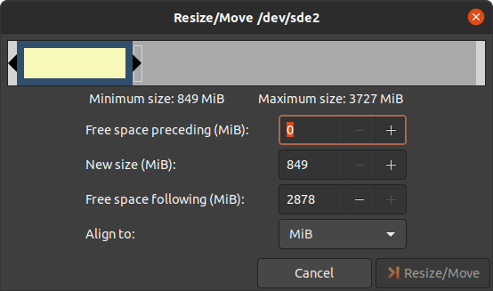
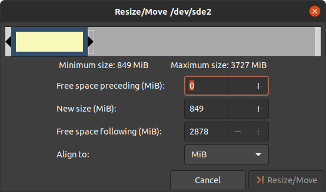
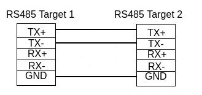

pdf格式的文档： 下载
PD24.1.2 i.MX 8M Plus BSP手册 |
|
文档标题 |
PD24.1.2 i.MX 8M Plus BSP Mainline 手册 |
文档类型 |
BSP 手册 |
型号 |
PD24.1.2 |
Yocto 手册 |
Scarthgap |
发布日期 |
2024/06/26 |
母文档 |
PD24.1.2 i.MX 8M Plus BSP Mainline 手册 |
下表显示了与本手册兼容的 BSP：
适用BSP |
BSP 发布类型 |
BSP发布日期 |
BSP 状态 |
|---|---|---|---|
BSP-Yocto-Ampliphy-i.MX8MP-PD24.1.2 |
小更新 |
2024/06/26 |
已发布 |
本手册指导您完成BSP包的安装、编译和烧写，并描述如何使用 phyCORE-i.MX8M Plus Kit 的硬件接口。本手册还包括如何从源码编译内核、u-boot镜像。本手册包含需要在PC(Linux操作系统)上执行的指令。
备注
This document contains code examples that describe the communication with the
board over the serial shell. The code examples lines begin with host:~$,
target:~$ or u-boot=>. This describes where the commands are to be
executed. Only after these keywords must the actual command be copied.
1. PHYTEC 文档
PHYTEC provides a variety of hardware and software documentation for all of its products. This includes any or all of the following:
- QS Guide
A short guide on how to set up and boot a phyCORE based board.
- Hardware Manual
A detailed description of the System-on-Module and accompanying carrierboard.
- Yocto Guide
A comprehensive guide for the Yocto version the phyCORE uses. This guide contains an overview of Yocto; introducing, installing, and customizing the PHYTEC BSP; how to work with programs like Poky and Bitbake; and much more.
- BSP 手册
A manual specific to the BSP version of the phyCORE. Information such as how to build the BSP, booting, updating software, device tree, and accessing peripherals can be found here.
- Development Environment Guide
This guide shows how to work with the Virtual Machine (VM) Host PHYTEC has developed and prepared to run various Development Environments. There are detailed step-by-step instructions for Eclipse and Qt Creator, which are included in the VM. There are instructions for running demo projects for these programs on a phyCORE product as well. Information on how to build a Linux host PC yourself is also a part of this guide.
- Pin Muxing Table
phyCORE SOMs have an accompanying pin table (in Excel format). This table will show the complete default signal path, from the processor to the carrier board. The default device tree muxing option will also be included. This gives a developer all the information needed in one location to make muxing changes and design options when developing a specialized carrier board or adapting a PHYTEC phyCORE SOM to an application.
除了这些标准手册和指南之外，PHYTEC 还将提供产品变更通知、应用说明和技术说明。这些文档将根据具体案例进行针对性提供。大部分文档都可以在我们产品的 https://www.phytec.de/produkte/system-on-modules/phycore-imx-8m-plus/#downloads 中找到。
1.1. 支持的硬件
在我们的网页上，您可以查看适用于BSP版本 BSP-Yocto-Ampliphy-i.MX8MP-PD24.1.2 的所有Machine及其对应的Article Numbers(产品型号)： 网页.
如果您在“Supported Machines”一栏选择了特定的 Machine Name ，您可以查看该machine下可用的 Article Numbers 以及硬件信息的简短描述。如果您只有硬件的 Article Numbers ，您可以将 Machine Name 下拉菜单留空，仅选择您的 Article Numbers 。现在，它应该会显示您特定硬件所需的 Machine Name
1.1.1. phyBOARD-Pollux 器件

phyBOARD-Pollux 器件图（顶部）
{kind=link}
phyBOARD-Pollux 器件图（底部）
2. 开始使用
The phyCORE-i.MX8M Plus Kit is shipped with a pre-flashed SD card. It contains the phytec-qt6demo-image and can be used directly as a boot source. The e.MMC is programmed with only a U-Boot by default. You can get all sources from the BSP downloads page. This chapter explains how to flash a BSP image to SD card and how to start the board.
There are several ways to flash an image to SD card or even e.MMC. Most notably
using simple, sequential writing with the Linux command line tool dd. An
alternative way is to use PHYTEC's system initialization program called
partup, which makes it especially easy to
format more complex systems. You can get prebuilt Linux binaries of partup from its release page. Also read
partup's README for installation
instructions.
2.1. 下载镜像
The image contains all necessary files and makes sure partitions and any raw
data are correctly written. Both the partup package and the WIC image, which can
be flashed using dd, can be downloaded from our BSP downloads page.
Note that you can find different image versions and variants on our download server. The images are located on the server by folders per "BSP-Version", "Distro-Name" and "Machine-Name".
Example to download a partup package and a WIC image from the download server:
host:~$ wget https://download.phytec.de/Software/Linux/BSP-Yocto-i.MX8MP/BSP-Yocto-Ampliphy-i.MX8MP-PD24.1.2/images/ampliphy-xwayland/phyboard-pollux-imx8mp-3/phytec-qt6demo-image-phyboard-pollux-imx8mp-3.rootfs.partup
host:~$ wget https://download.phytec.de/Software/Linux/BSP-Yocto-i.MX8MP/BSP-Yocto-Ampliphy-i.MX8MP-PD24.1.2/images/ampliphy-xwayland/phyboard-pollux-imx8mp-3/phytec-qt6demo-image-phyboard-pollux-imx8mp-3.rootfs.wic.xz
备注
For e.MMC, more complex partitioning schemes or even just large images, we
recommend using the partup package, as it is faster in writing than dd
and allows for a more flexible configuration of the target flash device.
2.2. 将镜像写入SD卡
警告
要创建SD卡启动盘，必须要拥有Linux PC上的root权限。在选择烧写设备时请务必小心！所选设备上的所有文件将在命令执行后立即被擦除，而且擦除前不会有任何进一步的确认！
选择错误的设备可能会导致 数据丢失 ，例如，可能会擦除您当前所在PC上的系统！
2.2.1. 寻找正确的设备
要创建SD卡启动盘，首先要找到PC上您SD卡对应的正确设备名称。在开始将镜像复制到SD卡之前，请卸载任何已挂载的分区。
为了获取正确的设备名称，请移除您的SD卡并执行：
host:~$ lsblk现在插入你的SD卡，然后再次执行命令：
host:~$ lsblk比较两个输出，以获取第二个输出中的新设备名称。这些是SD卡的设备名称（如果SD卡已格式化，则包括设备名称和对应的分区）。
为了验证找到的设备名称的最终正确性，请执行命令
sudo dmesg。在其输出的最后几行中，您应该也能找到设备名称，例如/dev/sde或/dev/mmcblk0（具体取决于您的系统）。
或者，您可以使用图形化的程序，例如 GNOME Disks 或 KDE Partition Manager 来找到正确的设备。
现在您已经得到了正确的设备名称，例如 /dev/sde，如果SD卡曾格式化过，需要确认已取消其分区的挂载，您可以在输出中看到带有附加了数字的设备名称（例如 /dev/sde1），它们是SD卡的分区。一些Linux发行版系统在设备插入时会自动挂载分区。在写入之前，必须卸载这些分区，以避免数据损坏。
卸载所有这些分区，例如：
host:~$ sudo umount /dev/sde1
host:~$ sudo umount /dev/sde2
Now, the SD card is ready to be flashed with an image, using either partup,
dd or bmaptool.
2.2.2. Using bmaptool
One way to prepare an SD card is using
bmaptool. Yocto
automatically creates a block map file (<IMAGENAME>-<MACHINE>.wic.bmap) for
the WIC image that describes the image content and includes checksums for data
integrity. bmaptool is packaged by various Linux distributions. For
Debian-based systems install it by issuing:
host:~$ sudo apt install bmap-tools
通过以下命令将WIC镜像烧写到SD卡：
host:~$ bmaptool copy phytec-qt6demo-image-phyboard-pollux-imx8mp-3?(.rootfs).wic?(.xz) /dev/<your_device>
将 <your_device> 替换为您之前找到的SD卡设备名称，并确保将文件 <IMAGENAME>-<MACHINE>.wic.bmap 与WIC镜像文件放在一起，以便bmaptool知道哪些块需要写入，哪些块需要跳过。
警告
bmaptool 仅擦写SD卡上镜像数据所在的区域。这意味着在写入新的镜像后，之前写入的旧U-Boot环境变量可能仍然可用。
2.2.3. 使用partup
使用partup烧写SD卡只需一个命令：
host:~$ sudo partup install phytec-qt6demo-image-phyboard-pollux-imx8mp-3?(.rootfs).partup /dev/<your_device>
确保将 <your_device> 替换为您之前找到的设备名称。
关于partup的进一步使用说明，请参阅其 官方文档 。
警告
使用resize2fs版本1.46.6及更早版本的PC系统（例如Ubuntu 22.04）无法烧写在Mickledore以及更新的yocto版本上创建的partup软件包。这个是因为resize2fs新增了默认选项而导致的兼容性问题。有关详细信息，请参阅 release notes 。
备注
partup 具有清除eMMC user区域中特定区域的功能，我们提供的partup程序中用该功能擦除U-Boot环境变量。这是 bmaptool 工具所无法完成的一点，如前一部分所提到的。
partup相较于其他烧写工具的一个主要优势是，它可以配置MMC的特定部分，比如他可以直接写入eMMCboot分区，无需调用其他命令。
2.2.4. 使用 dd
在卸载所有SD卡的挂载分区后，您可以烧写SD卡。
一些PHYTEC BSP会生成未压缩的镜像（文件名扩展名为*.wic），而另一些则生成压缩的镜像（文件名扩展名为*.wic.xz）。
要写入未压缩的镜像（*.wic），请使用以下命令：
host:~$ sudo dd if=phytec-qt6demo-image-phyboard-pollux-imx8mp-3?(.rootfs).wic of=/dev/<your_device> bs=1M conv=fsync status=progress
或者要写入压缩后的镜像（*.wic.xz），请使用以下命令：
host:~$ xzcat phytec-qt6demo-image-phyboard-pollux-imx8mp-3?(.rootfs).wic.xz | sudo dd of=/dev/<your_device> bs=1M conv=fsync status=progress
再次确保将 <your_device> 替换为之前找到的设备名称。
参数 conv=fsync 强制在 dd 返回之前对设备进行sync操作。这确保所有数据块都已写入SD卡，而没有任何数据缓存在内存中。参数 status=progress 将打印出进度信息。
2.3. 首次启动
要从SD卡启动， bootmode switch (S3) 需要设置为以下位置：

插入SD卡
Connect the target and the host with micro USB on (X1) debug USB
给开发板通电
3. 编译BSP
本节将指导您使用Yocto和phyLinux脚本进行 i.MX 8M Plus BSP的编译。更多有关phytec meta-layer和Yocto的信息，请访问： Yocto Reference Manual (scarthgap) 。
3.1. 基本设置
如果您从未在您的主机上使用Yocto编译过Phytec BSP，您应查看 Yocto Reference Manual (scarthgap) 中的BSP Workspace安装一节。
3.2. 下载BSP
There are two ways to get the BSP sources. You can download the complete BSP sources from our BSP downloads page; or you can fetch and build it yourself with Yocto. This is particularly useful if you want to make customizations.
The phyLinux script is a basic management tool for PHYTEC Yocto BSP releases written in Python. It is mainly a helper to get started with the BSP sources structure.
创建一个新的项目文件夹，获取phyLinux脚本，并赋予脚本具备可执行权限：
host:~$ mkdir ~/yocto host:~$ cd yocto/ host:~/yocto$ wget https://download.phytec.de/Software/Linux/Yocto/Tools/phyLinux host:~/yocto$ chmod +x phyLinux
警告
我们需要一个空的项目文件夹，phyLinux首先会清理当前所在的工作目录。从一个不为空的目录下调用phyLinux将会产生告警。
运行phyLinux：
host:~/yocto$ ./phyLinux init
备注
在首次初始化时，phyLinux脚本会要求您在
/usr/local/bin目录中安装Repo工具。During the execution of the init command, you need to choose your processor platform (SoC), PHYTEC's BSP release number, and the hardware (MACHINE) you are working on.
备注
If you cannot identify your board with the information given in the selector, have a look at the invoice for the product. And have a look at the webpage of our BSP.
也可以通过命令行参数直接传递这些信息：
host:~/yocto$ DISTRO=ampliphy-xwayland MACHINE=phyboard-pollux-imx8mp-3 ./phyLinux init -p imx8mp -r BSP-Yocto-Ampliphy-i.MX8MP-PD24.1.2
After the execution of the init command, phyLinux will print a few important notes. For example, it will print your git identity, SOC and BSP release which was selected as well as information for the next steps in the build process.
3.2.1. 开始构建
设置Shell环境变量：
host:~/yocto$ source sources/poky/oe-init-build-env
备注
在每次打开新的用于编译的shell时，都需要先执行这一步骤。
当前的工作目录会变更为 build/。
编译您的镜像：
host:~/yocto/build$ bitbake phytec-qt6demo-image
备注
对于第一次编译，我们建议从我们的较小的非图形化镜像phytec-headless-image开始，以查看一切是否正常工作。
host:~/yocto/build$ bitbake phytec-headless-image
第一次构建过程在现代的Intel Core i7处理器上大约需要40分钟。后续的构建将使用本次编译产生的缓存，大约需要3分钟。
3.2.2. BSP镜像
所有由Bitbake生成的镜像都放在 ~/yocto/build/deploy*/images/<machine> 。例如以下列表是 phyboard-pollux-imx8mp-3 machine生成的所有文件：
u-boot.bin: 编译后的U-boot bootloader二进制文件。不是最终镜像中的bootloader！
oftree: 默认内核设备树
u-boot-spl.bin: 二级程序加载器 (SPL)
bl31-imx8mp.bin: ARM可信固件二进制文件
lpddr4_pmu_train_1d_dmem_202006.bin, lpddr4_pmu_train_1d_imem_202006.bin, lpddr4_pmu_train_2d_dmem_202006.bin, lpddr4_pmu_train_2d_imem_202006.bin：DDR PHY固件镜像
Image: Linux内核镜像
Image.config: 内核config文件
imx8mp-phyboard-pollux-rdk*.dtb: 内核设备树文件
phytec-qt6demo-image*.tar.gz: 根文件系统
phytec-qt6demo-image*.wic.xz: SD卡镜像
4. 安装操作系统
为了保持文档的一致性和简洁性，假设已经配置好了TFTP服务器；所有生成的镜像（如上所列）都被复制到默认的/srv/tftp目录。如果您没有进行设置，您需要修改路径到包含镜像的目录。有关如何设置TFTP服务器和目录的说明，请参见 Setup Network Host 。
4.1. 启动模式开关 (S3)
小技巧
硬件修订版底板：1552.2
The phyBOARD-Pollux features a boot switch with four individually switchable ports to select the phyCORE-i.MX 8M Plus default bootsource.

eMMC |

内部fuse |

SPI NOR |

USB |
SD卡 |

测试模式 |
4.2. 烧写eMMC
要从 eMMC 启动，请确保 BSP 镜像已正确烧写到 eMMC，并且 bootmode switch (S3) 设置为 eMMC。
警告
当eMMC和SD卡上烧录了相同（完全一致）的镜像时，他们boot分区的UUID也是相同的。所以如果从emmc启动时，烧录一致镜像的SD卡也同时存在，这会导致不确定的后果，因为Linux会根据UUID来挂载启动分区。
target:~$ blkid
可以运行上述命令来检查系统启动在这种条件下是否会到影响。如果 mmcblk2p1 和 mmcblk1p1 具有相同的UUID，则会影响系统正确启动。
4.2.1. 从网络烧写 eMMC
i.MX 8M Plus 开发板具有以太网连接器，可以通过网络进行更新。确保正确设置主机，主机的IP需要设置为192.168.3.10，子网掩码为255.255.255.0，并且需要在主机开启TFTP服务。抽象来看，eMMC设备和SD卡十分类似。因此，可以直接将Yocto生成的 WIC镜像 （ <name>.wic ）直接烧写到eMMC。该镜像包含bootloader、内核、设备树、设备树overlay和根文件系统。
4.2.1.1. 在开发板的U-Boot中通过网络烧写eMMC
这些步骤将展示如何通过网络更新eMMC。
小技巧
需要保证设备和存储镜像的主机之间的网络正常！ Setup Network Host
小技巧
此步骤仅在镜像文件大小小于1.28GB时有效，因为Bootloader可用的RAM空间有限。
解压缩镜像：
host:~$ unxz /srv/tftp/phytec-headless-image-phyboard-pollux-imx8mp-3.rootfs.wic.xz
通过网络将您的镜像加载到内存中：
u-boot=> dhcp ${loadaddr} phytec-headless-image-phyboard-pollux-imx8mp-3.rootfs.wic BOOTP broadcast 1 DHCP client bound to address 192.168.3.11 (101 ms) Using ethernet@30be0000 device TFTP from server 192.168.3.10; our IP address is 192.168.3.11 Filename 'phytec-headless-image-phyboard-pollux-imx8mp-3.rootfs.wic'. Load address: 0x40480000 Loading: ###################################### ###################################### ###################################### ... ... ... ###################################### ############# 11.2 MiB/s done Bytes transferred = 911842304 (36599c00 hex)将镜像写入eMMC：
u-boot=> mmc dev 2 switch to partitions #0, OK mmc2(part 0) is current device u-boot=> setexpr nblk ${filesize} / 0x200 u-boot=> mmc write ${loadaddr} 0x0 ${nblk} MMC write: dev # 2, block # 0, count 1780942 ... 1780942 blocks written: OK
4.2.1.2. 在开发板的Linux系统中通过网络烧写eMMC
您可以在开发板系统中更新eMMC。
小技巧
需要保证设备和存储镜像的主机之间的网络正常！ Setup Network Host
使用以下命令，通过网络将压缩或未压缩的镜像和配套的 *.bmap 文件传送到核心板并写入 eMMC：
target:~$ scp <USER>@192.168.3.10:/srv/tftp/phytec-qt6demo-image-phyboard-pollux-imx8mp-3.rootfs.wic.* /tmp && bmaptool copy /tmp/phytec-qt6demo-image-phyboard-pollux-imx8mp-3.rootfs.wic.xz /dev/mmcblk2
4.2.1.3. 在Linux主机上通过网络烧写 eMMC
可以在您的Linux主机上将镜像烧写到eMMC。和之前一样，您需要在主机上准备一个完整的镜像。
小技巧
需要保证设备和存储镜像的主机之间的网络正常！ Setup Network Host
查看主机上可用的镜像文件：
host:~$ ls /srv/tftp
phytec-qt6demo-image-phyboard-pollux-imx8mp-3.rootfs.wic.xz
phytec-qt6demo-image-phyboard-pollux-imx8mp-3.rootfs.wic.bmap
通过网络ssh协议使用 bmaptool 命令将镜像发送到开发板的eMMC：
host:~$ scp /srv/tftp/phytec-qt6demo-image-phyboard-pollux-imx8mp-3.rootfs.wic.* root@192.168.3.11:/tmp && ssh root@192.168.3.11 "bmaptool copy /tmp/phytec-qt6demo-image-phyboard-pollux-imx8mp-3.rootfs.wic.xz /dev/mmcblk2"
4.2.2. 在运行的U-Boot中通过网络烧写eMMC U-Boot镜像
可以在U-Boot中更新U-Boot镜像imx-boot，eMMC上的U-Boot需要位于eMMC的user区域。
小技巧
需要保证设备和存储镜像的主机之间的网络正常！ Setup Network Host
通过tftp将镜像加载到RAM中，然后写入eMMC：
u-boot=> dhcp ${loadaddr} imx-boot
u-boot=> setexpr nblk ${filesize} / 0x200
u-boot=> mmc dev 2
u-boot=> mmc write ${loadaddr} 0x40 ${nblk}
提示
十六进制值表示偏移量，单位为512字节块的倍数。请参阅 偏移表 以获取相应SoC的正确值。
4.2.3. 从USB大容量存储设备烧写eMMC
4.2.3.1. 在开发板上通过U-Boot从USB烧写eMMC
备注
在U-Boot中只能使用下方的USB-A端口来连接优盘。
小技巧
此步骤仅在镜像文件大小小于1.28GB时有效，因为Bootloader可用的RAM空间有限。
下面这些步骤展示如何通过USB设备更新eMMC。将 bootmode switch (S3) 配置为SD卡并插入SD卡。给开发板上电并进入U-Boot环境。将已存储了未压缩WIC镜像的优盘插入开发板USB接口。
将镜像从USB设备加载到RAM中：
u-boot=> usb start
starting USB...
USB0: USB EHCI 1.00
scanning bus 0 for devices... 2 USB Device(s) found
scanning usb for storage devices... 1 Storage Device(s) found
u-boot=> fatload usb 0:1 ${loadaddr} phytec-headless-image-phyboard-pollux-imx8mp-3.rootfs.wic
497444864 bytes read in 31577 ms (15 MiB/s)
将镜像写入eMMC：
u-boot=> mmc dev 2
switch to partitions #0, OK
mmc2(part 0) is current device
u-boot=> setexpr nblk ${filesize} / 0x200
u-boot=> mmc write ${loadaddr} 0x0 ${nblk}
MMC write: dev # 2, block # 0, count 1024000 ... 1024000 blocks written: OK
u-boot=> boot
4.2.3.2. 在运行的Linux系统中从USB烧写eMMC
下面这些步骤展示如何在Linux系统上使用USB大容量存储设备烧写eMMC。您只需要一个保存在USB优盘上的完整镜像和一个可引导的WIC镜像。（例如：phytec-qt6demo-image-phyboard-pollux-imx8mp-3.rootfs.wic.xz）。将 bootmode switch (S3) 设置为SD卡。
插入并挂载U盘：
[ 60.458908] usb-storage 1-1.1:1.0: USB Mass Storage device detected [ 60.467286] scsi host0: usb-storage 1-1.1:1.0 [ 61.504607] scsi 0:0:0:0: Direct-Access 8.07 PQ: 0 ANSI: 2 [ 61.515283] sd 0:0:0:0: [sda] 3782656 512-byte logical blocks: (1.94 GB/1.80 GiB) [ 61.523285] sd 0:0:0:0: [sda] Write Protect is off [ 61.528509] sd 0:0:0:0: [sda] No Caching mode page found [ 61.533889] sd 0:0:0:0: [sda] Assuming drive cache: write through [ 61.665969] sda: sda1 [ 61.672284] sd 0:0:0:0: [sda] Attached SCSI removable disk target:~$ mount /dev/sda1 /mnt
现在查看您在USB优盘上保存的镜像文件：
target:~$ ls /mnt phytec-qt6demo-image-phyboard-pollux-imx8mp-3.rootfs.wic.xz phytec-qt6demo-image-phyboard-pollux-imx8mp-3.rootfs.wic.bmap
Write the image to the phyCORE-i.MX 8M Plus eMMC (MMC device 2 without partition):
target:~$ bmaptool copy /mnt/phytec-qt6demo-image-phyboard-pollux-imx8mp-3.rootfs.wic.xz /dev/mmcblk2
在完成写入后，您的开发板可以从eMMC启动。
小技巧
在此之前，您需要将 bootmode switch (S3) 配置为 eMMC。
4.2.4. 从SD卡烧写eMMC
即使没有可用的网络，您也可以更新eMMC。为此，您需要一个位于SD卡上的镜像文件（ *.wic ）。由于镜像文件相当大，您需要在SD卡创建第三个分区。要创建新分区或扩展您的SD卡，请参见 Resizing ext4 Root Filesystem 。
或者，使用partup包烧写SD卡，如 Getting Started 中所述。这样就可使用SD卡的全部容量。
4.2.4.1. 在开发板的uboot环境中通过SD卡烧写eMMC
小技巧
此步骤仅在镜像文件大小小于1.28GB时有效，因为Bootloader可用的RAM空间有限。
将一个可用的镜像烧写到SD卡，并创建一个EXT4格式的第三分区。将WIC镜像（例如 phytec-qt6demo-image.rootfs.wic）复制到该分区。
将 bootmode switch (S3) 配置为 SD 卡并插入 SD 卡。
打开电源并进入U-Boot。
加载镜像：
u-boot=> mmc dev 1 u-boot=> ext4load mmc 1:3 ${loadaddr} phytec-headless-image-phyboard-pollux-imx8mp-3.rootfs.wic reading 911842304 bytes read in 39253 ms (22.2 MiB/s)将当前mmc设备切换到eMMC：
u-boot=> mmc list FSL_SDHC: 1 (SD) FSL_SDHC: 2 (eMMC) u-boot=> mmc dev 2 switch to partitions #0, OK mmc2(part 0) is current device
将您保存在SD的WIC镜像（例如 phytec-qt6demo-image.roots.wic）烧写到eMMC。这将对卡进行分区，并将imx-boot、Image、dtb、dtbo和根文件系统复制到eMMC。
u-boot=> setexpr nblk ${filesize} / 0x200 u-boot=> mmc write ${loadaddr} 0x0 ${nblk} MMC write: dev # 2, block # 0, count 1780942 ... 1780942 blocks written: OK关闭电源并将 bootmode switch (S3) 更改为 eMMC。
4.2.4.2. 在开发板的linux环境中通过SD卡烧写eMMC
您也可以在Linux系统中烧写eMMC。您只需要一个partup包或保存在SD卡上的WIC镜像。
检查在SD卡上保存的partup包或WIC镜像文件：
target:~$ ls phytec-qt6demo-image-phyboard-pollux-imx8mp-3.rootfs.partup phytec-qt6demo-image-phyboard-pollux-imx8mp-3.rootfs.wic.xz phytec-qt6demo-image-phyboard-pollux-imx8mp-3.rootfs.wic.bmap
Write the image to the phyCORE-i.MX 8M Plus eMMC (MMC device 2 without partition) using partup:
target:~$ partup install phytec-qt6demo-image-phyboard-pollux-imx8mp-3.rootfs.partup /dev/mmcblk2
使用partup烧写的优点是可以充分利用eMMC设备的全部容量，会相应自动调整分区大小。
备注
另外，也可以使用
bmaptool工具：target:~$ bmaptool copy phytec-qt6demo-image-phyboard-pollux-imx8mp-3.rootfs.wic.xz /dev/mmcblk2
请注意，在使用
bmaptool烧写时，根文件系统分区并不会使用eMMC的最大容量。在完成写入后，您的开发板可以从eMMC启动。
警告
在此之前，您需要将 bootmode switch (S3) 配置为 eMMC。
4.3. RAUC
BSP支持RAUC（Robust Auto-Update Controller）。它管理设备固件更新的过程。这包括更新Linux内核、设备树和根文件系统。PHYTEC已撰写了一份在线手册，介绍如何在我们的BSP中集成RAUC：L-1006e.A6 RAUC更新与设备管理手册。
5. 开发
5.1. 主机网络准备
为了在bootloader中执行涉及网络的各种任务，需要配置一些主机服务。在开发主机上，必须安装和配置TFTP、NFS和DHCP服务。启动以太网所需的工具如下：
host:~$ sudo apt install tftpd-hpa nfs-kernel-server kea
5.1.1. TFTP服务设置
首先，创建一个目录来存储TFTP文件：
host:~$ sudo mkdir /srv/tftp
然后将您的BSP镜像文件复制到此目录，并确保other用户也对tftp目录中的所有文件具有读取权限，否则将无法从开发板访问这些文件。
host:~$ sudo chmod -R o+r /srv/tftp
您还需要为相应的接口配置一个静态IP地址。PHYTEC开发板的默认IP地址是192.168.3.11。可以将主机地址设置为192.168.3.10，子网掩码为255.255.255.0
host:~$ ip addr show <network-interface>
将 <network-interface> 替换为连接到开发板的网络接口。您可以通过不指定网络接口来显示所有可选网络接口。
返回的结果应包含以下内容：
inet 192.168.3.10/24 brd 192.168.3.255
创建或编辑
/etc/default/tftpd-hpa文件：# /etc/default/tftpd-hpa TFTP_USERNAME="tftp" TFTP_DIRECTORY="/srv/tftp" TFTP_ADDRESS=":69" TFTP_OPTIONS="-s -c"
将 TFTP_DIRECTORY 设置为您的 TFTP 服务器根目录
将TFTP_ADDRESS设置为TFTP服务监听的主机地址（设置为0.0.0.0:69以监听69端口上所有IP）。
设置 TFTP_OPTIONS，以下命令显示可配置的选项：
host:~$ man tftpd
重新启动服务以应用配置更改：
host:~$ sudo service tftpd-hpa restart
现在将开发板的以太网端口连接到您的主机。我们还需要在开发板和运行TFTP服务的主机之间建立网络连接。TFTP服务器的IP地址应设置为192.168.3.10，子网掩码为255.255.255.0。
5.1.1.1. NFS服务器设置
创建一个NFS目录：
host:~$ sudo mkdir /srv/nfs
Temporarily export the nfs directory: The NFS server is not restricted to a certain file system location, so all we have to do is to export our root file system to the embedded network. In this example, the whole directory is exported and the "lab network" address of the development host is 192.168.3.10. The IP address has to be adapted to the local needs:
host:~$ sudo exportfs -i -o rw,no_root_squash,sync,no_subtree_check 192.168.3.0/255.255.255.0:/srv/nfs
unexport the rootfs when finished:
host:~$ sudo exportfs -u 192.168.3.0/255.255.255.0:/srv/nfs
5.1.1.1.1. Permanent export
To make the export persistent across reboots on most distributions, modify the
/etc/exportsfile and export it:/srv/nfs 192.168.3.0/255.255.255.0(rw,no_root_squash,sync,no_subtree_check)
现在NFS服务器需要再次读取
/etc/exportfs文件：host:~$ sudo exportfs -ra
5.1.1.2. DHCP服务器设置
创建或编辑
/etc/kea/kea-dhcp4.conf文件；以内部子网为例，将 <network-interface> 替换为物理网络接口的名称：{ "Dhcp4": { "interfaces-config": { "interfaces": [ "<network-interface>/192.168.3.10" ] }, "lease-database": { "type": "memfile", "persist": true, "name": "/tmp/dhcp4.leases" }, "valid-lifetime": 28800, "subnet4": [{ "id": 1, "next-server": "192.168.3.10", "subnet": "192.168.3.0/24", "pools": [ { "pool": "192.168.3.1 - 192.168.3.255" } ] }] } }
警告
在创建子网时请小心，因为这可能会扰乱公司网络政策。为了安全起见，请使用不同的子网，并通过 interfaces 配置选项指定该网络。
现在DHCP服务需要重新读取
/etc/kea/kea-dhcp4.conf文件：host:~$ sudo systemctl restart kea-dhcp4-server
当您启动/重启主机时，如果kea-dhcp4配置中指定的网络接口未处于活动状态，kea-dhcp4-server将无法启动。因此请确保在连接接口后启动或者重启该systemd服务。
备注
DHCP server setup is only needed when using dynamic IP addresses. For our vendor BSPs, static IP addresses are used by default.
u-boot=> env print ip_dyn
ip_dyn=no
To use dynamic IP addresses for netboot, ip_dyn needs to be set to yes.
5.2. 从网络启动内核
从网络启动意味着通过TFTP加载内核和设备树，并通过NFS加载根文件系统。但bootloader需要从另外的的启动设备加载。
5.2.1. 在主机上放置网络启动的镜像
将内核镜像复制到您的tftp目录中：
host:~$ cp Image /srv/tftp
将设备树复制到您的tftp目录：
host:~$ cp oftree /srv/tftp
确保other用户对tftp目录中的所有文件具有读取权限，否则将无法从开发板访问它们：
host:~$ sudo chmod -R o+r /srv/tftp
将根文件系统解压到您的NFS目录中：
host:~$ sudo tar -xvzf phytec-qt6demo-image-phyboard-pollux-imx8mp-3.rootfs.tar.gz -C /srv/nfs
备注
请确保使用sudo执行命令，以保留根文件系统中文件的所属权限。
5.2.2. 从开发板启动
将开发板启动到U-boot，按任意键暂停。
要从网络启动，请运行：
u-boot=> run netboot
5.3. 使用UUU工具
NXP的镜像更新工具（UUU-Tool）是一款在主机上运行的软件，用于通过SDP（串行下载协议）在开发板上下载并运行bootloader。有关详细信息，请访问 https://github.com/nxp-imx/mfgtools 或下载 官方UUU工具文档。
5.3.1. 使用UUU工具的准备
请按照 https://github.com/nxp-imx/mfgtools#linux 上的说明进行操作。
如果您要从源代码编译UUU，请将其添加到
PATH中：这个BASH命令只是暂时将UUU添加到
PATH中。要永久添加，请将此行添加到~/.bashrc中。export PATH=~/mfgtools/uuu/:"$PATH"设置udev规则（在
uuu -udev中有详细说明）：host:~$ sudo sh -c "uuu -udev >> /etc/udev/rules.d/70-uuu.rules" host:~$ sudo udevadm control --reload
5.3.2. 获取镜像
从我们的服务器下载 imx-boot，或者从您的 Yocto 编译目录中的 build/deploy/images/phyboard-pollux-imx8mp-3/ 获取它。为了将 wic 镜像烧写到 eMMC，你还需要 phytec-qt6demo-image-phyboard-pollux-imx8mp-3.rootfs.wic
5.3.3. 开发板准备
将 bootmode switch (S3) 设置为 USB串行下载。同时，将 USB 端口 X5 (upper connector) 连接到主机。
5.3.4. 通过UUU工具启动bootloader
执行并给开发板上电：
host:~$ sudo uuu -b spl imx-boot
您可以像往常一样通过 (X1) 在终端上查看启动日志。
备注
UUU工具使用的默认启动命令为fastboot。如果您想更改此设置，请在U-Boot提示符下使用setenv bootcmd_mfg修改环境变量bootcmd_mfg。但是请注意，当开发板再次使用UUU工具启动时，默认环境变量会被加载，saveenv重启后不生效。如果您想永久的更改U-boot的启动命令，则需要更改U-Boot代码。
5.3.5. 通过UUU工具将U-boot镜像烧写到eMMC
警告
UUU将U-boot刷入eMMC BOOT（硬件）启动分区后，会在eMMC中设置BOOT_PARTITION_ENABLE。这带来一个问题，因为我们希望bootloader保存在eMMC 的USER分区中。如果烧写入新的包含U-boot的.wic镜像而不禁用BOOT_PARTITION_ENABLE位，将导致设备始终使用保存在BOOT分区中的U-boot。为了在U-Boot中解决此问题，需要：
u-boot=> mmc partconf 2 0 0 0
u-boot=> mmc partconf 2
EXT_CSD[179], PARTITION_CONFIG:
BOOT_ACK: 0x0
BOOT_PARTITION_ENABLE: 0x0
PARTITION_ACCESS: 0x0
或者在linux中检查 用从eMMC boot分区启动
这样bootloader虽然会被烧写到 eMMC 的BOOT分区，但在启动中不会被使用！
在使用 partup 工具和 .partup 包进行eMMC烧写时，上述过程是默认进行的，这是partup的优势，简化烧写过程。
执行并给开发板上电：
host:~$ sudo uuu -b emmc imx-boot
5.3.6. 通过UUU工具将wic镜像烧写到eMMC
执行并给开发板上电：
host:~$ sudo uuu -b emmc_all imx-boot phytec-qt6demo-image-phyboard-pollux-imx8mp-3.rootfs.wic
5.4. 独立编译准备
In this section, we describe how to build the U-Boot and the Linux kernel without using the Yocto Project. This procedure makes the most sense for development. The U-Boot source code, the Linux kernel, and all other git repositories are available on GitHub.
5.4.1. Git 仓库
使用的 U-Boot 仓库：
https://github.com/phytec/u-boot-phytec.git
我们的U-Boot基于 u-boot-phytec 并添加了一些硬件相关的补丁。
使用的 Linux 内核仓库：
https://github.com/phytec/linux-phytec.git
我们的 i.MX 8M Plus 内核是基于 linux-phytec 内核。
要找出核心板应使用的u-boot和kernel版本对应的git仓库tag标签，请查看您的BSP源文件夹：
recipes-kernel/linux/linux-phytec_*.bb meta-phytec/recipes-bsp/u-boot/u-boot-phytec_*.bb
5.4.2. 获取SDK
You can download the SDK from the SDK downloads page, or build it yourself with Yocto:
移动到Yocto的build目录：
host:~$ source sources/poky/oe-init-build-env host:~$ bitbake -c populate_sdk phytec-qt6demo-image # or another image
在成功编译后，SDK安装包保存在 build/deploy*/sdk。
5.4.3. 安装SDK
设置正确的权限并安装SDK：
host:~$ chmod +x phytec-ampliphy-xwayland-glibc-x86_64-phytec-qt6demo-image-cortexa53-crypto-toolchain-5.0.1.sh host:~$ ./phytec-ampliphy-xwayland-glibc-x86_64-phytec-qt6demo-image-cortexa53-crypto-toolchain-5.0.1.sh ============================================================================================================ Enter target directory for SDK (default: /opt/ampliphy-xwayland/5.0.1): You are about to install the SDK to "/opt/ampliphy-xwayland/5.0.1". Proceed [Y/n]? Y Extracting SDK...done Setting it up...done SDK has been successfully set up and is ready to be used.
5.4.4. 使用SDK
通过在工具链目录中source environment-setup 文件来初始化您的 shell 交叉编译环境：
host:~$ source /opt/ampliphy-xwayland/5.0.1/environment-setup-cortexa53-crypto-phytec-linux
5.4.5. 安装所需工具
独立编译Linux kernel和U-Boot需要主机安装一些额外的工具。对于Ubuntu，您可以使用以下命令安装它们：
host:~$ sudo apt install bison flex libssl-dev
5.5. 单独编译U-Boot
5.5.1. 获取源代码
获取U-Boot源代码：
host:~$ git clone https://github.com/phytec/u-boot-phytec.git
要获取正确的 U-Boot tag，您需要查看我们的release notes，可以在这里找到：release notes
此版本中使用的 tag 称为 v2024.01-phy4
查看所需的 U-Boot tag：
host:~$ cd ~/u-boot-phytec/ host:~/u-boot-phytec$ git fetch --all --tags host:~/u-boot-phytec$ git checkout tags/v2024.01-phy4
设置编译环境：
host:~/u-boot-phytec$ source /opt/ampliphy-xwayland/5.0.1/environment-setup-cortexa53-crypto-phytec-linux
5.5.2. 获取所需的二进制文件
要编译bootloader，您需要将这些文件复制到您的 u-boot-phytec 编译目录，并将其重命名以适应 mkimage 脚本：
ARM Trusted firmware 二进制文件 （ mkimage 工具 兼容格式 bl31.bin ）：bl31-imx8mp.bin
OPTEE 镜像 (可选的)：tee.bin
DDR firmware files ( mkimage 工具 兼容格式 lpddr4_[i,d]mem_*d_*.bin ): lpddr4_dmem_1d_*.bin, lpddr4_dmem_2d_*.bin, lpddr4_imem_1d_*.bin, lpddr4_imem_2d_*.bin
如果您已经使用Yocto编译了我们的BSP，您可以在yocto工程目录中获取 bl31-imx8mp.bin、tee.bin和lpddr4_*.bin：BSP Images
警告
确保您重命名所需的文件，以和 mkimage tool 兼容。
5.5.3. 编译bootloader
编译 flash.bin (imx-boot):
host:~/u-boot-phytec$ make phycore-imx8mp_defconfig host:~/u-boot-phytec$ make flash.bin
5.5.4. 将bootloader烧写到块设备上
flash.bin 文件可以在 u-boot-phytec/ 目录下找到，现在可以进行烧写。需要指定芯片特定的偏移量：
SoC |
User分区偏移量 |
Boot分区偏移量 |
e.MMC Device |
|---|---|---|---|
i.MX 8M Plus |
32 kiB |
0 kiB |
/dev/mmcblk2 |
例如，烧写SD卡：
host:~/u-boot-phytec$ sudo dd if=flash.bin of=/dev/sd[x] bs=1024 seek=32 conv=fsync
提示
如果您有我们的BSP Yocto工程代码，具体的偏移值也会在Yocto变量"BOOTLOADER_SEEK"和"BOOTLOADER_SEEK_EMMC"中声明。
5.5.5. 使用固定内存大小编译U-Boot
如果您的系统因为EEPROM中的硬件信息损坏或丢失而无法启动，您可以创建一个具有固定RAM大小的flash.bin。但您仍应联系我们支持部门以烧写正确的EEPROM数据。
按照步骤获取U-boot源代码，并切换到 Build U-Boot 章节说明的分支。
编辑文件 configs/phycore-imx8mp_defconfig:
CONFIG_TARGET_PHYCORE_IMX8MP=y
CONFIG_PHYCORE_IMX8MP_RAM_SIZE_FIX=y
# CONFIG_PHYCORE_IMX8MP_RAM_SIZE_1GB=y
# CONFIG_PHYCORE_IMX8MP_RAM_SIZE_2GB=y
# CONFIG_PHYCORE_IMX8MP_RAM_SIZE_4GB=y
选择正确的RAM大小，确保与核心板上的贴装的器件一致，取消注释该RAM大小的行。保存更改后，按照 Build U-Boot 章节的剩余步骤进行操作。
5.5.6. 编译支持固定RAM大小与频率的U-Boot
Starting with PD23.1.0 NXP or PD24.1.2 mainline release, the phyCORE-i.MX 8M Plus SoMs with revision 1549.3 and newer also support 2GHz RAM timings. These will be enabled for supported boards automatically, but they can also be enabled or disabled manually.
编辑文件 configs/phycore-imx8mp_defconfig。将使用2GHz时序大小固定的RAM配置：
CONFIG_TARGET_PHYCORE_IMX8MP=y
CONFIG_PHYCORE_IMX8MP_RAM_SIZE_FIX=y
# CONFIG_PHYCORE_IMX8MP_RAM_SIZE_1GB=y
# CONFIG_PHYCORE_IMX8MP_RAM_SIZE_2GB=y
# CONFIG_PHYCORE_IMX8MP_RAM_SIZE_4GB=y
CONFIG_PHYCORE_IMX8MP_RAM_FREQ_FIX=y
CONFIG_PHYCORE_IMX8MP_USE_2GHZ_RAM_TIMINGS=y
在保存更改后，按照 Build U-Boot 中剩下的步骤操作。
5.5.7. 编译固定的RAM频率的U-Boot
从PD24.1.2 Mainline版本或者 PD24.1.0 NXP 版本开始，U-Boot可以编译成只固定RAM频率，RAM大小还是保持从EEPROM读取。
编辑文件 configs/phycore-imx8mp_defconfig。将使用EEPROM中配置的容量与固定的频率RAM配置：
CONFIG_TARGET_PHYCORE_IMX8MP=y
CONFIG_PHYCORE_IMX8MP_RAM_FREQ_FIX=y
# CONFIG_PHYCORE_IMX8MP_USE_2GHZ_RAM_TIMINGS=y
# CONFIG_PHYCORE_IMX8MP_USE_1_5GHZ_RAM_TIMINGS=y
在保存更改后，按照 Build U-Boot 中剩下的步骤操作。
5.6. 单独编译内核
备注
DTB Filenames: Command lines listed in this chapter use the device tree file name imx8mp-phyboard-pollux-rdk.dtb as an example. The actual file name always corresponds to the SOM/carrier board combination you want to use. For supported SOM/carrier board combinations, see Supported Hardware.
5.6.1. 配置源代码
使用的 linux-phytec 分支可以在 release notes 中找到
此版本所需的标签称为 v6.6.21-phy1
Check out 所需的 linux-phytec 标签：
host:~$ git clone https://github.com/phytec/linux-phytec.git host:~$ cd ~/linux-phytec/ host:~/linux-phytec$ git fetch --all --tags host:~/linux-phytec$ git checkout tags/v6.6.21-phy1
为了提交更改，强烈建议切换到一个新分支：
host:~/linux-phytec$ git switch --create <new-branch>
设置编译环境：
host:~/linux-phytec$ source /opt/ampliphy-xwayland/5.0.1/environment-setup-cortexa53-crypto-phytec-linux
5.6.2. 编译内核
编译Linux内核：
host:~/linux-phytec$ make defconfig host:~/linux-phytec$ make -j$(nproc)
安装内核模块，比如安装到 NFS 目录：
host:~/linux-phytec$ make INSTALL_MOD_PATH=/home/<user>/<rootfspath> modules_install
镜像可以在 ~/linux-phytec/arch/arm64/boot/Image 找到
dtb文件可以在 ~/linux-phytec/arch/arm64/boot/dts/freescale/imx8mp-phyboard-pollux-rdk.dtb 找到
要（重新）编译设备树和 -overlay 文件，只需运行
host:~/linux-phytec$ make dtbs
备注
如果您遇到以下编译问题：
scripts/dtc/yamltree.c:9:10: fatal error: yaml.h: No such file or directory
确保您在主机系统上安装了 "libyaml-dev" 包：
host:~$ sudo apt install libyaml-dev
5.6.3. 将内核复制到SD卡
内核及module和对应的设备树二进制文件可以用以下方式复制到已挂载的SD卡上。
host:~/linux-phytec$ cp arch/arm64/boot/Image /path/to/sdcard/boot/
host:~/linux-phytec$ cp arch/arm64/boot/dts/freescale/imx8mp-phyboard-pollux-rdk.dtb /path/to/sdcard/boot/oftree
host:~/linux-phytec$ make INSTALL_MOD_PATH=/path/to/sdcard/root/ modules_install
5.7. 获取BSP开发中版本
5.7.1. 当前release的开发中版本
这些release manifest文件是为了让您访问 Yocto BSP的开发版本。它们不会在phyLinux选择菜单中显示，需要手动选择。可以使用以下命令行来完成此操作：
host:~$ ./phyLinux init -p imx8mp -r BSP-Yocto-Ampliphy-i.MX8MP-PD24.1.2
这将初始化一个BSP，用于跟踪当前版本（ BSP-Yocto-Ampliphy-i.MX8MP-PD24.1.2 ）的最新开发版本。从现在开始，在此文件夹中执行 repo sync 将从我们的Git仓库中拉取所有最新的更改：
host:~$ repo sync
5.7.2. 即将发布版本的开发中版本
即将发布版本的开发中版本可以通过这种方式访问。请执行以下命令，并查找一个比最新版本（ BSP-Yocto-Ampliphy-i.MX8MP-PD24.1.2 ）的PDXX.Y数字更高的版本，并且以 .y 结尾：
host:~$ ./phyLinux init -p imx8mp
5.8. 获取最新的Upstream支持
我们有一个使用Yocto主分支（不是NXP发布的）的manifest，他使用upstream的Linux和U-Boot。这可以用来测试最新的upstream kernel/U-Boot。
备注
master分支的manifest反映了最新的开发状态。有时会出现一些bug。我们会定期修复master分支。
host:~$ ./phyLinux init -p imx8mp -r BSP-Yocto-Ampliphy-i.MX8MP-master
5.9. 格式化SD卡启动盘以允许通过SD卡进行烧录
使用单一的SD卡启动盘对存储介质进行烧写是开发过程中的常见任务。本章节针对此场景提供基础说明。大多数镜像的大小超过了默认的root分区剩余容量。要使用SD卡进行烧写，根文件系统需要扩展或创建一个单独的分区。有几种不同的方法可以格式化SD卡。最简单的方法是使用Gparted。
5.9.1. Gparted
获取 GParted：
host:~$ sudo apt install gparted
将SD卡插入主机并获取设备名称：
host:~$ dmesg | tail ... [30436.175412] sd 4:0:0:0: [sdb] 62453760 512-byte logical blocks: (32.0 GB/29.8 GiB) [30436.179846] sdb: sdb1 sdb2 ...
卸载所有SD卡分区。
启动 GParted：
host:~$ sudo gparted
5.9.1.1. 扩展根文件系统
警告
使用resize2fs版本1.46.6及更早版本的PC系统（例如Ubuntu 22.04）无法烧写在Mickledore以及更新的yocto版本上创建的partup软件包。这个是因为resize2fs新增了默认选项而导致的兼容性问题。有关详细信息，请参阅 发布说明 。
在右上角的下拉菜单中选择您的SD卡设备
选择 ext4 根分区并点击调整大小：
 

您可以根据需要拖动滑块或手动输入大小。

通过点击“Change Size”按钮确认您的输入。

要应用您的更改，请按绿色勾号。
现在您可以挂载根分区并将例如 phytec-qt6demo-image-phyboard-pollux-imx8mp-3.rootfs.wic.xz 镜像复制到其中。然后再卸载它：
host:~$ sudo cp phytec-qt6demo-image-phyboard-pollux-imx8mp-3.rootfs.wic.xz /mnt/ ; sync host:~$ umount /mnt
5.9.1.2. 创建第三个分区
在右上角的下拉菜单中选择您的SD卡设备
选择更大的未分配区域，然后点击"New"：

点击"Add"
按绿色勾确认更改。

现在您可以挂载新的分区并将例如 phytec-qt6demo-image-phyboard-pollux-imx8mp-3.rootfs.wic.xz 镜像复制到其中。然后再次卸载它：
host:~$ sudo mount /dev/sde3 /mnt host:~$ sudo cp phytec-qt6demo-image-phyboard-pollux-imx8mp-3.rootfs.wic.xz /mnt/ ; sync host:~$ umount /mnt
6. 设备树 (DT)
6.1. 介绍
以下文本简要描述了设备树，关于设备树的相关文档可以在Linux kernel文档中找到（https://docs.kernel.org/devicetree/usage-model.html）。
“Open Firmware Device Tree”或简称设备树（DT）是一种用于描述硬件的数据结构和语言。更具体地说，它是一个可由操作系统读取的硬件描述，以便操作系统不需要对machine的细节进行硬编码
内核文档是学习设备树的一个非常好的资源。关于设备树数据格式的概述可以在 devicetree.org 的设备树使用页面找到。
6.2. PHYTEC i.MX 8M Plus BSP设备树概念
以下部分说明了PHYTEC配置基于 i.MX 8M Plus 的核心板设备树的一些规则。
6.2.1. 设备树结构
Module.dtsi - 文件包括所有安装在核心板上的设备，例如PMIC和RAM。
Board.dts - 包含核心板 dtsi 文件。从SoC i.MX 8M Plus 引出并在底板使用的设备也包含在此 dts 中。
Overlay.dtso - 根据核心板或底板上可选硬件（例如 SPI 闪存或 PEB-AV-10）的情况来启用/禁用一些功能。
在Linux内核的根目录下，我们的 i.MX 8 平台的设备树文件可以在 arch/arm64/boot/dts/freescale/ 找到。
6.2.2. 设备树Overlay
设备树Overlay是可以在启动时合并到设备树中的设备树片段。下面是扩展板的硬件描述。对比源码中的include，overlay通过覆盖的方式来生效。overlay也可以根据实际开发板的硬件配置来设置设备树节点状态。设备树Overlay与我们Linux内核仓库中的其他设备树文件一起放在子文件夹 arch/arm64/boot/dts/freescale/ 中。
phyboard-pollux-imx8mp-3.conf 可用的overlay文件有：
7. 访问外设
To find out which boards and modules are supported by the release of PHYTEC's phyCORE-i.MX 8M Plus BSP described herein, visit our BSP web page and click the corresponding BSP release in the download section. Here you can find all hardware supported in the columns "Hardware Article Number" and the correct machine name in the corresponding cell under "Machine Name".
为了最大化软件的可复用性，Linux内核提供了一个巧妙的软件架构，软件会根据不同硬件组件来分层。BSP（板级支持包）尽可能地对套件的功能进行模块化。当定制开发板或自定义核心板时，大部分软件配置可以简单的复制粘贴。与具体的开发板相关的内核代码可以在内核代码仓库中的设备树（DT）中找到，路径为 arch/arm64/boot/dts/freescale/*.dts 。
实际上，软件复用是Linux内核最重要的特性之一，尤其是在ARM架构中，它必须应对大量复杂且不同的系统级芯片（SoC）。整个开发板的硬件在设备树（DT）中描述，独立于内核镜像。硬件描述在一个单独的二进制文件中，称为设备树二进制文件（Device Tree Blob，DTB）（参见 device tree）。
请阅读PHYTEC i.MX 8M Plus BSP设备树概念部分，以了解我们的 i.MX 8 BSP设备树模型。
以下部分概述了 i.MX 8 平台上支持的硬件组件及其对应操作系统驱动程序。客户可以根据自身的需求进行更改。
7.1. i.MX 8M Plus 引脚复用
该 i.MX 8M Plus Soc包含许多外设接口。为了在保持最大功能性的同时减少封装尺寸和降低整体系统成本，许多 i.MX 8M Plus 引脚可以多路复用为多达八种信号功能。尽管存在许多可能的引脚多路复用组合，但由于时序限制，只有一定数量的组合被称为有效的 IO 集合。这些有效的 IO 集合经过精心挑选，以为用户提供尽可能多的应用场景。
请参考我们的硬件手册或NXP i.MX 8M Plus 参考手册，以获取有关特定引脚和复用能力的更多信息。
IO 集合的配置，也称为复用（muxing），是在设备树中完成的。驱动程序pinctrl-single读取设备树的节点fsl,pins，并进行引脚复用配置。
以下是 imx8mp-phyboard-pollux-rdk.dts中UART1设备的引脚复用示例：
pinctrl_uart1: uart1grp {
fsl,pins = <
MX8MP_IOMUXC_UART1_RXD_UART1_DCE_RX 0x140
MX8MP_IOMUXC_UART1_TXD_UART1_DCE_TX 0x140
>;
};
字符串的第一部分 MX8MP_IOMUXC_UART1_RXD_UART1_DCE_RX 指定了引脚（在这个例子中是 UART1_RXD）。字符串的第二部分（UART1_DCE_RX）是该引脚所选的复用项。引脚设置值（右侧的十六进制值）定义了引脚的不同模式，例如，内部拉电阻是否被激活。在当前情况下，内部拉电阻被禁用。
UART1引脚复用的设备树：https://github.com/phytec/linux-phytec/blob/v6.6.21-phy1/arch/arm64/boot/dts/freescale/imx8mp-phyboard-pollux-rdk.dts#L387
7.2. RS232/RS485
The phyCORE-i.MX 8M Plus supports up to 4 UART units. On the phyBOARD-Pollux, TTL level signals of UART1 (the standard console) and UART4 are routed to Silicon Labs CP2105 UART to USB converter expansion. This USB is brought out at Micro-USB connector X1. UART3 is at X6 (Expansion Connector) at TTL level. UART2 is connected to a multi-protocol transceiver for RS-232 and RS-485, available at pin header connector X2 at the RS-232 level, or at the RS-485 level. The configuration of the multi-protocol transceiver is done by jumpers JP3 and JP4 on the baseboard. For more information about the correct setup please refer to the phyCORE-i.MX 8M Plus/phyBOARD-Pollux Hardware Manual section UARTs.
对于RS-232和RS-485，使用相同的设备树节点。RS485模式可以通过ioctl TIOCSRS485 来启用。双向通讯支持也可以通过ioctl进行配置。请查看我们的小示例应用程序rs485test，该程序也包含在BSP中。需要设置跳线 JP3 和 JP4 。
7.2.1. RS232
以人类可读的格式显示终端的当前设置：
target:~$ stty -a
UART接口的配置可以通过stty命令完成。例如：
target:~$ stty -F /dev/ttymxc1 115200 crtscts raw -echo
通过简单的echo和cat，可以测试基本的通信。示例：
target:~$ echo 123 > /dev/ttymxc1
host:~$ cat /dev/ttyUSB2
主机应打印出 "123"。
7.2.2. RS485
提示
在使用较长电缆时，请记得在总线两端各使用120欧姆的终端电阻。
为了方便测试，请查看linux-serial-test。这个工具会通过调用RS485的IOCTL，发送恒定的数据流。
target:~$ linux-serial-test -p /dev/ttymxc1 -b 115200 --rs485 0
有关linux-serial-test工具及其参数的更多信息，请访问此链接：linux-serial-test
linux-serial-test会自动设置ioctl，也可以通过rs485conf手动设置。
你可以用以下命令显示当前配置：
target:~$ rs485conf /dev/ttymxc1
您可以通过以下方式列出帮助选项：
target:~$ rs485conf /dev/ttymxc1 -h
Linux kernel文档描述了如何在C代码中调用IOCTL： https://www.kernel.org/doc/Documentation/serial/serial-rs485.txt
7.2.2.1. RS485 半双工
对于半双工模式，应按下图方式连接：
硬件手册中有描述各个引脚的功能。
对于半双工模式，您可以手动设置 ioctls，如下所示：
target:~$ rs485conf /dev/ttymxc1 -e 1 -r 0
target:~$ rs485conf /dev/ttymxc1
= Current configuration:
RS485 enabled: true
RTS on send: high
RTS after send: low
RTS delay before send: 0
RTS delay after send: 0
Receive during sending data: false
Bus termination enabled: false
然后您可以测试发送和接收是否正常工作，方法如下：
target1:~$ cat /dev/ttymxc1
target2:~$ echo test > /dev/ttymxc1
您应该会在target1上看到 "test" 打印出来。您也可以切换角色，在target2上发送并在target1上接收。
或者，您还可以使用 linux-serial-test 工具进行测试：
target1:~$ linux-serial-test -s -e -f -p /dev/ttymxc1 -b 115200 --rs485 0 -t -i 8
...
/dev/ttymxc1: count for this session: rx=57330, tx=0, rx err=0
target2:~$ linux-serial-test -s -e -f -p /dev/ttymxc1 -b 115200 --rs485 0 -r -o 5
...
/dev/ttymxc1: count for this session: rx=0, tx=57330, rx err=0
在此示例中，target1将是接收器，target2将是发射器。您还可以切换角色。请记住，先启动接收方，然后再启动发射方。接收方将接收8秒，发射方将在5秒内发送。接收方需要比发射器发送的时间稍长一些。程序结束时会打印最终的 "count for this session" 。在那里，您可以检查所有发送的帧是否都被接收到。
所有测试都是target到target，但也可以使用 USB 到 RS485 转换器进行主机到目标的测试。您可能需要调整接口。
7.2.2.2. RS485 全双工
对于全双工模式，您应按下图连接：

硬件手册中有描述各个引脚的功能。
对于全双工模式，您可以手动设置 ioctls，如下所示：
target:~$ rs485conf /dev/ttymxc1 -e 1 -r 1
target:~$ rs485conf /dev/ttymxc1
= Current configuration:
RS485 enabled: true
RTS on send: high
RTS after send: low
RTS delay before send: 0
RTS delay after send: 0
Receive during sending data: true
Bus termination enabled: false
您还可以进行echo测试以查看发送和接收是否正常工作：
target1:~$ cat /dev/ttymxc1
target2:~$ echo test > /dev/ttymxc1
您应该会在target1上看到 "test" 打印出来。您也可以切换角色，在target2上发送并在target1上接收。
要检查全双工操作是否正常工作，您需要使用 linux-serial-test 工具：
target1:~$ linux-serial-test -s -e -f -p /dev/ttymxc1 -b 115200 --rs485 0 -o 10 -i 15 -W 2
...
/dev/ttymxc1: count for this session: rx=114660, tx=118755, rx err=0
target2:~$ linux-serial-test -s -e -f -p /dev/ttymxc1 -b 115200 --rs485 0 -o 10 -i 15 -W 2
...
/dev/ttymxc1: count for this session: rx=118755, tx=114660, rx err=0
在此示例中，两个目标设备将同时发送和接收。它们将在15秒内接收并在10秒内发送。接收方需要接收更长时间，以便所有发送的消息都能接收到。请记住几乎同时启动两个目标设备。启动时间的微小差异可以通过-W 2选项来弥补。最后程序将打印“本会话的最终计数”。在那里您可以检查所有传输的帧是否都被接收。
所有的测试示例都是目标设备到目标设备的，但也可以通过USB到RS485转换器在主机与目标之间完成。可能需要调整接口以便命令在主机上正常工作。
RS232和RS485的设备树： https://github.com/phytec/linux-phytec/blob/v6.6.21-phy1/arch/arm64/boot/dts/freescale/imx8mp-phyboard-pollux-rdk.dts#L251
7.3. Ethernet
phyBOARD-Pollux-i.MX 8M Plus 提供两个以太网接口。我们的核心板和底板各提供一个千兆以太网接口。
警告
硬件中的以太网接口命名约定（ethernet0 和 ethernet1）与Linux中的网络接口（eth0 和 eth1）不一致。因此，请注意这些差异：
所有接口都提供一个标准的Linux网络端口，可以使用BSD套接字接口进行编程。整个网络配置由systemd-networkd守护进程管理。相关的配置文件可以在开发板的 /lib/systemd/network/ 目录中找到，以及在BSP中的 meta-ampliphy/recipes-core/systemd/systemd-conf 目录中。
IP addresses can be configured within *.network files. The interfaces are configured to static IP as default. The default IP address and netmask for eth0 is:
eth0: 192.168.3.11/24
To configure eth0 to dynamic IP over DHCP, go to
/lib/systemd/network/\*-eth0.network
and delete the line:
Address=192.168.3.11/24
The DT Ethernet setup might be split into two files depending on your hardware configuration: the module DT and the board-specific DT. The device tree set up for the ethernet where the PHY is populated on the SoM can be found here: https://github.com/phytec/linux-phytec/blob/v6.6.21-phy1/arch/arm64/boot/dts/freescale/imx8mp-phycore-som.dtsi#L41.
The device tree set up for EQOS Ethernet IP core where the PHY is populated on the phyBOARD-Pollux can be found here: https://github.com/phytec/linux-phytec/blob/v6.6.21-phy1/arch/arm64/boot/dts/freescale/imx8mp-phyboard-pollux-rdk.dts#L106
7.3.1. 网络配置
7.3.1.1. U-boot网络环境
我们目前在U-Boot中使用动态IP地址。这是通过以下这个变量启用的：
u-boot=> printenv ip_dyn ip_dyn=yes
设置NFS的路径。一个示例如下：
u-boot=> setenv nfsroot /home/user/nfssrc
请注意，这些修改只会影响bootloader的设置。
7.3.1.2. 内核网络环境
Find the ethernet settings for eth0 in the target kernel:
target:~$ ip -statistics address show eth0 2: eth0: <NO-CARRIER,BROADCAST,MULTICAST,UP> mtu 1500 qdisc mq state UP group default qlen 1000 link/ether 50:2d:f4:19:d6:33 brd ff:ff:ff:ff:ff:ff RX: bytes packets errors dropped missed mcast 0 0 0 0 0 0 TX: bytes packets errors dropped carrier collsns 0 0 0 0 0 0
Temporary adaption of the eth0 configuration:
target:~$ ip address add 192.168.3.11/24 dev eth0
7.4. SD card
The i.MX 8M Plus supports a slot for Secure Digital cards to be used as general-purpose block devices. These devices can be used in the same way as any other block device.
警告
这些设备是热插拔的。然而，您必须确保在设备仍然挂载时不要拔掉它。这可能会导致数据丢失！
After inserting an SD card, the kernel will generate new device nodes in /dev. The full device can be reached via its /dev/mmcblk1 device node. SD card partitions will show up as:
/dev/mmcblk1p<Y>
<Y> 作为分区编号，从1开始计数，直到该设备的最大分区数量。分区可以使用任何类型的文件系统进行格式化，并且可以以标准方式进行处理，例如，可以使用mount 和 umount 命令进行分区挂载和卸载。
小技巧
这些分区设备节点要求SD卡包含有效的分区表（类似于“硬盘”）。如果没有分区表，则整个设备作为一个文件系统使用（类似于“软盘”）。在这种情况下，必须使用 /dev/mmcblk1 进行格式化和挂载。卡始终以可写方式挂载。
MMC（SD卡插槽）接口的DT配置：https://github.com/phytec/linux-phytec//blob/v6.6.21-phy1/arch/arm64/boot/dts/freescale/imx8mp-phyboard-pollux-rdk.dts#L261
7.5. e.MMC Devices
PHYTEC modules like phyCORE-i.MX 8M Plus are populated with an e.MMC memory chip as the main storage. e.MMC devices contain raw Multi-Level Cells (MLC) or Triple-Level Cells (TLC) combined with a memory controller that handles ECC and wear leveling. They are connected via an SD/MMC interface to the i.MX 8M Plus and are represented as block devices in the Linux kernel like SD cards, flash drives, or hard disks.
The electric and protocol specifications are provided by JEDEC (https://www.jedec.org/standards-documents/technology-focus-areas/flash-memory-ssds-ufs-emmc/e-mmc). The e.MMC manufacturer's datasheet is relatively short and meant to be read together with the supported version of the JEDEC e.MMC standard.
PHYTEC currently utilizes the e.MMC chips with JEDEC Version 5.0 and 5.1
7.5.1. 扩展CSD寄存器
e.MMC devices have an extensive amount of extra information and settings that are available via the Extended CSD registers. For a detailed list of the registers, see manufacturer datasheets and the JEDEC standard.
在Linux用户空间中，您可以查询寄存器：
target:~$ mmc extcsd read /dev/mmcblk2
你将会看到：
=============================================
Extended CSD rev 1.7 (MMC 5.0)
=============================================
Card Supported Command sets [S_CMD_SET: 0x01]
[...]
7.5.2. 使能后台操作 (BKOPS)
In contrast to raw NAND Flash, an e.MMC device contains a Flash Transfer Layer (FTL) that handles the wear leveling, block management, and ECC of the raw MLC or TLC. This requires some maintenance tasks (for example erasing unused blocks) that are performed regularly. These tasks are called Background Operations (BKOPS).
默认情况下（取决于芯片），后台操作可能会定期执行，也可能不会，他影响读写的最大延迟时间。
The JEDEC Standard has specified a method since version v4.41 that the host can issue BKOPS manually. See the JEDEC Standard chapter Background Operations and the description of registers BKOPS_EN (Reg: 163) and BKOPS_START (Reg: 164) in the e.MMC datasheet for more details.
寄存器 BKOPS_EN（寄存器：163）的位 MANUAL_EN（位 0）的含义：
值 0：主机不支持手动触发 BKOPS。设备写入性能会受到影响。
值1：主机支持手动触发BKOPS。当主机不进行设备读写时，它会不时触发BKOPS。
The mechanism to issue background operations has been implemented in the Linux kernel since v3.7. You only have to enable BKOPS_EN on the e.MMC device (see below for details).
JEDEC标准v5.1引入了一种新的自动BKOPS功能。它使主机能够定期触发后台操作，因为设备在空闲时会自动启动BKOPS（请参见寄存器BKOPS_EN（寄存器：163）中位AUTO_EN的描述）。
要检查 BKOPS_EN 是否已设置，请执行：
target:~$ mmc extcsd read /dev/mmcblk2 | grep BKOPS_EN
输出将会是，例如：
Enable background operations handshake [BKOPS_EN]: 0x01 #OR Enable background operations handshake [BKOPS_EN]: 0x00
值0x00表示BKOPS_EN被禁用，设备的写入性能受到影响。值0x01表示BKOPS_EN被启用，主机将不时发起后台操作。
通过以下命令使能BKOPS_EN：
target:~$ target:~$ mmc --help [...] mmc bkops_en <auto|manual> <device> Enable the eMMC BKOPS feature on <device>. The auto (AUTO_EN) setting is only supported on eMMC 5.0 or newer. Setting auto won't have any effect if manual is set. NOTE! Setting manual (MANUAL_EN) is one-time programmable (unreversible) change.
要设置BKOPS_EN位，请执行：
target:~$ mmc bkops_en manual /dev/mmcblk2
为了确保新设置生效并且内核能够自动触发BKOPS，请先关闭系统：
target:~$ poweroff
小技巧
BKOPS_EN位是一次性可编程的，无法恢复。
7.5.3. 可靠写入
有两种不同的可靠写入选项：
Reliable Write option for a whole e.MMC device/partition.
单次写的可靠写入方式。
小技巧
Do not confuse e.MMC partitions with partitions of a DOS, MBR, or GPT partition table (see the previous section).
The first Reliable Write option is mostly already enabled on the e.MMCs mounted on the phyCORE-i.MX 8M Plus SoMs. To check this on the running target:
target:~$ mmc extcsd read /dev/mmcblk2 | grep -A 5 WR_REL_SET
Write reliability setting register [WR_REL_SET]: 0x1f
user area: the device protects existing data if a power failure occurs during a write o
peration
partition 1: the device protects existing data if a power failure occurs during a write
operation
partition 2: the device protects existing data if a power failure occurs during a write
operation
partition 3: the device protects existing data if a power failure occurs during a write
operation
partition 4: the device protects existing data if a power failure occurs during a write
operation
--
Device supports writing EXT_CSD_WR_REL_SET
Device supports the enhanced def. of reliable write
如果默认没有启用，可以使用mmc工具启用它：
target:~$ mmc --help
[...]
mmc write_reliability set <-y|-n|-c> <partition> <device>
Enable write reliability per partition for the <device>.
Dry-run only unless -y or -c is passed.
Use -c if more partitioning settings are still to come.
NOTE! This is a one-time programmable (unreversible) change.
第二个可靠写入方式是命令CMD23中的配置位Reliable Write Request parameter（可靠写入请求参数）（位31）。自内核版本v3.0起，文件系统（例如ext4的日志）和用户空间应用程序（如fdisk的分区表）会通过内核使用该可靠写功能。在Linux内核源代码中，它通过标志REQ_META进行处理。
结论：使用挂载选项 data=journal 的 ext4 文件系统在断电情况下是安全的。文件系统检查可以在断电后恢复文件系统，但在断电前刚写入的数据可能会丢失。在各种情况下，都可以恢复文件系统的正常状态。为了确保应用程序文件的正常保存，应用程序中应使用系统函数 fdatasync 或 fsync。
7.5.4. 调整 ext4 根文件系统的大小
When flashing the SD card image to e.MMC the ext4 root partition is not extended to the end of the e.MMC. parted can be used to expand the root partition. The example works for any block device such as e.MMC, SD card, or hard disk.
获取当前设备大小：
target:~$ parted /dev/mmcblk2 print
输出如下：
Model: MMC Q2J55L (sd/mmc) Disk /dev/mmcblk2: 7617MB Sect[ 1799.850385] mmcblk2: p1 p2 or size (logical/physical): 512B/512B Partition Table: msdos Disk Flags: Number Start End Size Type File system Flags 1 4194kB 72.4MB 68.2MB primary fat16 boot, lba 2 72.4MB 537MB 465MB primary ext4
使用parted将文件系统分区调整为设备的最大大小：
target:~$ parted /dev/mmcblk2 resizepart 2 100% Information: You may need to update /etc/fstab. target:~$ parted /dev/mmcblk2 print Model: MMC Q2J55L (sd/mmc) Disk /dev/mmcblk2: 7617MB Sector size (logical/physical): 512[ 1974.191657] mmcblk2: p1 p2 B/512B Partition Table: msdos Disk Flags: Number Start End Size Type File system Flags 1 4194kB 72.4MB 68.2MB primary fat16 boot, lba 2 72.4MB 7617MB 7545MB primary ext4
将文件系统调整为新的分区大小：
target:~$ resize2fs /dev/mmcblk2p2 resize2fs 1.46.1 (9-Feb-2021) Filesystem at /dev/mmcblk2p2 is mounted on /; on-line resizing required [ 131.609512] EXT4-fs (mmcblk2p2): resizing filesystem from 454136 to 7367680 blocks old_desc_blocks = 4, new_desc_blocks = 57 [ 131.970278] EXT4-fs (mmcblk2p2): resized filesystem to 7367680 The filesystem on /dev/mmcblk2p2 is now 7367680 (1k) blocks long
Increasing the filesystem size can be done while it is mounted. But you can also boot the board from an SD card and then resize the file system on the e.MMC partition while it is not mounted.
7.5.5. 启用伪SLC模式
e.MMC devices use MLC or TLC (https://en.wikipedia.org/wiki/Multi-level_cell) to store the data. Compared with SLC used in NAND Flash, MLC or TLC have lower reliability and a higher error rate at lower costs.
如果您更喜欢可靠性而不是存储容量，可以启用伪SLC模式或SLC模式。这个方法采用了增强属性，该属性在JEDEC标准中有所描述，可以对设备的一个连续区域设置。JEDEC标准并未规定增强属性的实现细节和保证，这由芯片制造商自行决定。对于美光（Micron）芯片，增强属性提高了可靠性，但也将容量减半。
警告
在设备上启用增强属性时，所有数据将被丢失。
以下步骤展示了如何启用增强属性。
First obtain the current size of the e.MMC device with:
target:~$ parted -m /dev/mmcblk2 unit B print
你将收到：
BYT; /dev/mmcblk2:63652757504B:sd/mmc:512:512:unknown:MMC S0J58X:;
如您所见，该设备的容量为 63652757504 字节 = 60704 MiB。
要获取启用伪SLC模式后的设备的大小，请使用：
target:~$ mmc extcsd read /dev/mmcblk2 | grep ENH_SIZE_MULT -A 1
例如：
Max Enhanced Area Size [MAX_ENH_SIZE_MULT]: 0x000764 i.e. 3719168 KiB -- Enhanced User Data Area Size [ENH_SIZE_MULT]: 0x000000 i.e. 0 KiB
这里的最大大小是3719168 KiB = 3632 MiB。
现在，您可以通过输入以下命令为整个设备设置增强属性，例如 3719168 KiB：
target:~$ mmc enh_area set -y 0 3719168 /dev/mmcblk2
你将获得：
Done setting ENH_USR area on /dev/mmcblk2 setting OTP PARTITION_SETTING_COMPLETED! Setting OTP PARTITION_SETTING_COMPLETED on /dev/mmcblk2 SUCCESS Device power cycle needed for settings to take effect. Confirm that PARTITION_SETTING_COMPLETED bit is set using 'extcsd read' after power cycle
为了确保新设置已生效，请关闭系统：
target:~$ poweroff并进行上下电。建议您现在确认设置是否正确。
首先，检查ENH_SIZE_MULT的值，它必须是3719168 KiB：
target:~$ mmc extcsd read /dev/mmcblk2 | grep ENH_SIZE_MULT -A 1
您应该看到：
Max Enhanced Area Size [MAX_ENH_SIZE_MULT]: 0x000764 i.e. 3719168 KiB -- Enhanced User Data Area Size [ENH_SIZE_MULT]: 0x000764 i.e. 3719168 KiB
最后，检查设备的大小：
target:~$ parted -m /dev/mmcblk2 unit B print BYT; /dev/mmcblk2:31742492672B:sd/mmc:512:512:unknown:MMC S0J58X:;
7.5.6. 擦除设备
It is possible to erase the e.MMC device directly rather than overwriting it with zeros. The e.MMC block management algorithm will erase the underlying MLC or TLC or mark these blocks as discard. The data on the device is lost and will be read back as zeros.
After booting from SD card execute:
target:~$ blkdiscard -f --secure /dev/mmcblk2
选项 --secure 确保命令在 eMMC 设备擦除所有块之前会等待。-f (强制) 选项强制擦写，当 eMMC 设备包含有效数据分区时需要使用-f选项。
小技巧
target:~$ dd if=/dev/zero of=/dev/mmcblk2 conv=fsync
该命令也会擦除设备上的所有信息，但这个命令不利于设备的磨损均衡，并且需要花费更长的时间！
7.5.7. e.MMC Boot Partitions
An e.MMC device contains four different hardware partitions: user, boot1, boot2, and rpmb.
The user partition is called the User Data Area in the JEDEC standard and is the main storage partition. The partitions boot1 and boot2 can be used to host the bootloader and are more reliable. Which partition the i.MX 8M Plus uses to load the bootloader is controlled by the boot configuration of the e.MMC device. The partition rpmb is a small partition and can only be accessed via a trusted mechanism.
此外，User分区可以分为四个自定义的一般用途分区。对此功能的解释不在本文件涵盖的范围。有关更多信息，请参阅JEDEC标准第7.2章分区管理。
小技巧
Do not confuse e.MMC partitions with partitions of a DOS, MBR, or GPT partition table.
The current PHYTEC BSP does not use the extra partitioning feature of e.MMC devices. The U-Boot is flashed at the beginning of the user partition. The U-Boot environment is placed at a fixed location after the U-Boot. An MBR partition table is used to create two partitions, a FAT32 boot, and ext4 rootfs partition. They are located right after the U-Boot and the U-Boot environment. The FAT32 boot partition contains the kernel and device tree.
With e.MMC flash storage it is possible to use the dedicated boot partitions for redundantly storing the bootloader. The Bootloader environment still resides in the user area before the first partition. The user area also still contains the bootloader which the image first shipped during its initialization process. Below is an example, to flash the bootloader to one of the two boot partitions and switch the boot device via userspace commands.
7.5.7.1. 通过用户空间命令
在主机上运行：
host:~$ scp <bootloader> root@192.168.3.11:/tmp/
The partitions boot1 and boot2 are read-only by default. To write to them from
user space, you have to disable force_ro in the sysfs.
To manually write the bootloader to the e.MMC boot partitions, first disable the write protection:
target:~$ echo 0 > /sys/block/mmcblk2boot0/force_ro
target:~$ echo 0 > /sys/block/mmcblk2boot1/force_ro
Write the bootloader to the e.MMC boot partitions:
target:~$ dd if=/tmp/<bootloader> of=/dev/mmcblk2boot0
target:~$ dd if=/tmp/<bootloader> of=/dev/mmcblk2boot1
下表是 i.MX 8M Plus SoC的偏移量：
SoC |
User分区偏移量 |
Boot分区偏移量 |
e.MMC Device |
|---|---|---|---|
i.MX 8M Plus |
32 kiB |
0 kiB |
/dev/mmcblk2 |
After that set the boot partition from user space using the mmc tool:
(对于 'boot0') :
target:~$ mmc bootpart enable 1 0 /dev/mmcblk2
(对于'boot1')：
target:~$ mmc bootpart enable 2 0 /dev/mmcblk2
To disable booting from the e.MMC boot partitions simply enter the following command:
target:~$ mmc bootpart enable 0 0 /dev/mmcblk2
To explicitly enable booting from the e.MMC user area, run:
target:~$ mmc bootpart enable 7 0 /dev/mmcblk2
7.5.7.2. Automatic failover
The ROM loader implements an automatic failover mechanism for e.MMC boot partitions. If booting
from the primary partition fails, the system automatically attempts to boot from the secondary
partition. This failover is indicated by a change in the boot message from
Boot Stage: Primary boot to Boot Stage: Secondary boot.
This functionality is limited to boot0 and boot1 partitions and does not apply to the user area.
7.6. SPI主设备
i.MX 8M Plus 控制器包含一个 FlexSPI 和一个 ECSPI IP 核。FlexSPI 主控制器支持两个 SPI 通道，最多可连接 4 个设备。每个通道支持单通道/双通道/四通道/八通道模式的数据传输（1/2/4/8 条数据线）。ECSPI 控制器支持 3 个 SPI 接口，每个接口都有一个专用的CS（chip select）引脚。由于CS也可通过 GPIO 实现，因此每个通道上可以连接多个设备。
在设备树中，SPI主节点的定义：https://github.com/phytec/linux-phytec/blob/v6.6.21-phy1/arch/arm64/boot/dts/freescale/imx8mp-phycore-som.dtsi#L67
7.7. GPIOs
phyBOARD-Pollux 具有一组专门用于GPIO的引脚。这些引脚直接连接到 i.MX 8M Plus 引脚，并被复用为 GPIO。它们可以直接在 Linux 用户空间中使用。处理器将其 GPIO 组织为5个GPIO组（GPIO1 – GPIO5），每个组包含 32 个GPIO。gpiochip0、gpiochip32、gpiochip64、gpiochip96 和 gpiochip128 是这些内部 i.MX 8M Plus GPIO 组 GPIO1 – GPIO5 的 sysfs 表示。
GPIO被标识为GPIO<X>_<Y>（例如：GPIO5_07）。<X>表示GPIO Bank，从1计数到5，而<Y>表示该Bank内的GPIO。<Y>从0计数到31（每个bank有32个GPIO）。
相比之下，Linux内核使用一个单一的整数来枚举系统中所有可用的GPIO。计算正确数字的公式是：
Linux GPIO number: <N> = (<X> - 1) * 32 + <Y>
从用户空间访问GPIO将使用libgpiod。它提供了一个库和工具，用于与Linux GPIO字符设备进行交互。以下是一些工具的用法示例：
检测芯片上的gpiochips：
target:~$ gpiodetect gpiochip0 [30200000.gpio] (32 lines) gpiochip1 [30210000.gpio] (32 lines) gpiochip2 [30220000.gpio] (32 lines) gpiochip3 [30230000.gpio] (32 lines) gpiochip4 [30240000.gpio] (32 lines)
显示关于gpiochips的详细信息，包括它们的名称、consumer、方向、活动状态和附加flag：
target:~$ gpioinfo -c gpiochip0
读取GPIO的值（例如从gpiochip0的GPIO 20）：
target:~$ gpioget -c gpiochip0 20
将gpiochip0上的GPIO 20的值设置为0并退出工具：
target:~$ gpioset -z -c gpiochip0 20=0
gpioset的帮助文本显示了可能的选项：
target:~$ gpioset --help Usage: gpioset [OPTIONS] <line=value>... Set values of GPIO lines. Lines are specified by name, or optionally by offset if the chip option is provided. Values may be '1' or '0', or equivalently 'active'/'inactive' or 'on'/'off'. The line output state is maintained until the process exits, but after that is not guaranteed. Options: --banner display a banner on successful startup -b, --bias <bias> specify the line bias Possible values: 'pull-down', 'pull-up', 'disabled'. (default is to leave bias unchanged) --by-name treat lines as names even if they would parse as an offset -c, --chip <chip> restrict scope to a particular chip -C, --consumer <name> consumer name applied to requested lines (default is 'gpioset') -d, --drive <drive> specify the line drive mode Possible values: 'push-pull', 'open-drain', 'open-source'. (default is 'push-pull') -h, --help display this help and exit -l, --active-low treat the line as active low -p, --hold-period <period> the minimum time period to hold lines at the requested values -s, --strict abort if requested line names are not unique -t, --toggle <period>[,period]... toggle the line(s) after the specified period(s) If the last period is non-zero then the sequence repeats. --unquoted don't quote line names -v, --version output version information and exit -z, --daemonize set values then detach from the controlling terminal Chips: A GPIO chip may be identified by number, name, or path. e.g. '0', 'gpiochip0', and '/dev/gpiochip0' all refer to the same chip. Periods: Periods are taken as milliseconds unless units are specified. e.g. 10us. Supported units are 's', 'ms', and 'us'. *Note* The state of a GPIO line controlled over the character device reverts to default when the last process referencing the file descriptor representing the device file exits. This means that it's wrong to run gpioset, have it exit and expect the line to continue being driven high or low. It may happen if given pin is floating but it must be interpreted as undefined behavior.
警告
某些GPIO用于特殊功能。在使用某个GPIO之前，请参考您板子的原理图或硬件手册，以确保该IO未被其他功能占用。
7.7.1. 通过sysfs访问GPIO
警告
通过sysfs访问GPIO已经过时了，我们建议使用libgpiod。
默认情况下不再支持通过sysfs访问GPIO。只有手动在内核配置中启用 CONFIG_GPIO_SYSFS 后才能支持。要在menuconfig中使 CONFIG_GPIO_SYSFS 可见，必须首先启用选项 CONFIG_EXPERT 。
You can also add this option for example to the defconfig you use in
arch/arm64/configs/ in the linux kernel sources. For our NXP based releases,
this could be for example defconfig:
..
CONFIG_EXPERT=y
CONFIG_GPIO_SYSFS=y
..
您也可以创建一个新的config片段。有关详细信息，请参阅我们的 Yocto Reference Manual。
7.8. LED灯
如果有任何LED灯连接到GPIO管脚，您可以通过特定的LED驱动程序接口访问它们，而不是使用通用的GPIO接口（请参见GPIO部分）。您将通过 /sys/class/leds/ 而不是 /sys/class/gpio/ 来访问它们。LED的最大亮度可以从 max_brightness 文件中读取。brightness文件将设置LED的亮度（取值范围从0到max_brightness）。大多数LED硬件上不支持调整亮度，所以在所有非零亮度下都会点亮。
下面是一个简单的例子。
要获取所有可用的LED，请输入：
target:~$ ls /sys/class/leds
led-1@ led-2@ led-3@ mmc1::@ mmc2::@
The phyBOARD-Pollux provides the following LED indicators: led-0, led-1 and led-2.
打开LED灯：
target:~$ echo 255 > /sys/class/leds/led-1/brightness
关闭LED：
target:~$ echo 0 > /sys/class/leds/led-1/brightness
7.9. I²C总线
该 i.MX 8M Plus 包含多个多主支持快速模式的 I²C模块。PHYTEC板提供了许多不同的I²C设备，这些设备连接到 i.MX 8M Plus 的I²C模块。 本节描述了我们 phyBOARD-Pollux 中集成的一些I²C设备的基本设备使用及其设备树（DT）表示。
i2c的设备树节点包含一些设置，例如时钟频率，用于设置总线频率，以及引脚控制设置，包括scl-gpios和sda-gpios，这些是用于总线恢复的备用引脚配置。
I²C1 总线DT配置（例如 imx8mp-phycore-som.dtsi）： https://github.com/phytec/linux-phytec/blob/v6.6.21-phy1/arch/arm64/boot/dts/freescale/imx8mp-phycore-som.dtsi#L81
I²C2总线DT配置（例如 imx8mp-phyboard-pollux-rdk.dts）： https://github.com/phytec/linux-phytec/blob/v6.6.21-phy1/arch/arm64/boot/dts/freescale/imx8mp-phyboard-pollux-rdk.dts#L145
7.10. EEPROM
在 phyCORE-i.MX 8M Plus 上贴了一个 i2c 接口的 EEPROM 存储。它有两个地址。主 EEPROM 空间（总线：I2C-0 地址：0x51）可以通过 Linux 中的 sysfs 接口访问。主 EEPROM 的前 256 字节和 ID 页（总线：I2C-0 地址：0x59）用于板检测，不可修改。因此，ID 页不能通过 sysfs 接口访问。覆盖保留空间将导致启动问题。
备注
如果您删除了保留的EEPROM空间数据，请联系我们的支持团队！
7.10.1. phyCORE-i.MX 8M Plus 上的I2C EEPROM
警告
EEPROM ID页面（总线：I2C-0 地址：0x59）和正常EEPROM区域的前256个字节（总线：I2C-0 地址：0x51）不可被擦除或修改。这将影响bootloader的行为。板子可能无法正确启动。
phyCORE-i.MX 8M Plus SoM上的I2C EEPROM连接到I2C-0总线的I2C地址0x51。可以直接对该设备进行读写操作：
target:~$ hexdump -c /sys/class/i2c-dev/i2c-0/device/0-0051/eeprom
要读取并以十六进制打印 EEPROM 的前 1024 字节，请执行：
target:~$ dd if=/sys/class/i2c-dev/i2c-0/device/0-0051/eeprom bs=1 count=1024 | od -x
要用零填充4KiB的EEPROM（总线：I2C-0 地址：0x51），并保留EEPROM数据，请使用：
target:~$ dd if=/dev/zero of=/sys/class/i2c-dev/i2c-0/device/0-0051/eeprom seek=1 bs=256 count=15
7.10.2. EEPROM SoM 检测
在 phyCORE-i.MX 8M Plus 上配置的I2C EEPROM具有一个可通过I2C地址0x59在i2c0上寻址的独立ID页面，以及一个可通过I2C地址0x51在i2c0上寻址的正常区域。PHYTEC使用这个32字节的数据区域来存储关于SoM的信息，包括PCB版本和配置。
在启动的早期阶段读取EEPROM数据。它用于选择正确的DDR RAM配置。这使得可以使用相同的bootloader镜像来支持不同的RAM大小，并自动选择正确的DTS overlay。
如果EEPROM ID页面数据和正常区域的前256个字节被删除，bootloader程序将回退到 phyCORE-i.MX 8M Plus Kit RAM设置，即 2GiB RAM。
警告
EEPROM ID页面（总线：I2C-0 地址：0x59）和正常EEPROM区域的前256个字节（总线：I2C-0 地址：0x51）不可被擦除或修改。这将影响bootloader的行为。板子可能无法正确启动。
使用API修订版2数据格式烧写的核心板将在早期启动阶段打印出有关模块的信息。
DT representation, e.g. in phyCORE-i.MX 8M Plus file imx8mp-phycore-som.dtsi can be found in our PHYTEC git: https://github.com/phytec/linux-phytec/blob/v6.6.21-phy1/arch/arm64/boot/dts/freescale/imx8mp-phycore-som.dtsi#L169
7.11. RTC
RTC可以通过 /dev/rtc* 访问。由于PHYTEC板通常有多个RTC，因此可能会有多个RTC设备文件。
要找到RTC设备的名称，可以通过以下方式读取其sysfs条目：
target:~$ cat /sys/class/rtc/rtc*/name
例如，你将得到：
rtc-rv3028 0-0052 snvs_rtc 30370000.snvs:snvs-rtc-lp
小技巧
这将列出所有实时时钟（RTC），包括非I²C接口的RTC。如果存在设备树/aliases条目，Linux会根据这些条目分配RTC设备ID。
日期和时间可以通过 hwclock 工具和date命令进行操作。要显示目标上设置的当前日期和时间：
target:~$ date
Thu Jan 1 00:01:26 UTC 1970
使用日期命令更改日期和时间。日期命令以以下语法设置时间："YYYY-MM-DD hh:mm:ss (+|-)hh:mm"：
target:~$ date -s "2022-03-02 11:15:00 +0100"
Wed Mar 2 10:15:00 UTC 2022
备注
您的时区（在此示例中为 +0100）可能会有所不同。
使用date命令并不会改变实时时钟（RTC）的时间和日期，因此如果我们重启开发板，这些更改将会被丢弃。要写入RTC，我们需要使用 hwclock 命令。使用 hwclock 工具将当前的日期和时间（通过date命令设置）写入RTC，然后重启开发板以检查更改是否已应用到RTC上：
target:~$ hwclock -w
target:~$ reboot
.
.
.
target:~$ date
Wed Mar 2 10:34:06 UTC 2022
要从实时时钟（RTC）设置系统时间和日期，请使用：
target:~$ date
Thu Jan 1 01:00:02 UTC 1970
target:~$ hwclock -s
target:~$ date
Wed Mar 2 10:45:01 UTC 2022
7.11.1. RTC参数
实时时钟（RTC）具有一些功能，可以通过 hwclock 工具进行读取和设置。
我们可以通过以下方式检查RTC支持的功能：
target:~$ hwclock --param-get features The RTC parameter 0x0 is set to 0x71.
这个值的含义在内核中进行了编码，每个位的定义为：
#define RTC_FEATURE_ALARM 0 #define RTC_FEATURE_ALARM_RES_MINUTE 1 #define RTC_FEATURE_NEED_WEEK_DAY 2 #define RTC_FEATURE_ALARM_RES_2S 3 #define RTC_FEATURE_UPDATE_INTERRUPT 4 #define RTC_FEATURE_CORRECTION 5 #define RTC_FEATURE_BACKUP_SWITCH_MODE 6 #define RTC_FEATURE_ALARM_WAKEUP_ONLY 7 #define RTC_FEATURE_CNT 8
我们可以通过以下方式检查RTC BSM（Backup Switchover Mode 备份切换模式）：
target:~$ hwclock --param-get bsm The RTC parameter 0x2 is set to 0x1.
我们可以通过以下方式设置RTC BSM：
target:~$ hwclock --param-set bsm=0x2 The RTC parameter 0x2 will be set to 0x2.
BSM位的定义为：
#define RTC_BSM_DISABLED 0 #define RTC_BSM_DIRECT 1 #define RTC_BSM_LEVEL 2 #define RTC_BSM_STANDBY 3
小技巧
您应该将BSM模式设置为DSM或LSM，以便在初始电源不可用时，RTC可以切换到备用电源。请查看 RV-3028 RTC的Datasheet，以了解LSM（电平切换模式）和DSM（直接切换模式）这两个定义的工作模式。
I²C RTCs 的设备树：https://github.com/phytec/linux-phytec/blob/v6.6.21-phy1/arch/arm64/boot/dts/freescale/imx8mp-phycore-som.dtsi#L175
7.12. USB主控制器
i.MX 8M Plus SoC的USB控制器为众多消费类便携设备提供了一种低成本的连接解决方案，实现USB设备之间的数据传输，传输速度可达4 Gbit/s（超高速'SS'）。USB子系统具有两个独立的USB控制器。这两个控制器都能够作为USBDevice或USB Host使用。每个核心都连接到一个USB 3.0物理层（PHY）。
BSP支持大容量存储设备（优盘）和键盘。其他与USB相关的设备驱动程序必须根据需要在内核配置中启用。由于udev，所有连接的存储设备都会获得唯一的ID，并可以在 /dev/disk/by-id 中找到。这些ID可以在 /etc/fstab 中用于以不同的方式挂载不同的USB存储设备。
7.13. CAN FD
phyBOARD-Pollux 支持两个 flexCAN 接口，支持 CAN FD。这些接口支持 Linux 标准 CAN 框架，该框架建立在 Linux 网络层之上。使用这个框架，CAN 接口表现得像普通的 Linux 网络设备，同时具备一些 CAN 特有的附加功能。更多信息可以在 Linux 内核文档中找到：https://www.kernel.org/doc/html/latest/networking/can.html
使用：
target:~$ ip link
查看接口的状态。两个CAN接口显示为can0和can1。
要获取有关can0的信息，例如比特率和错误计数器，请输入：
target:~$ ip -d -s link show can0
can0的信息将如下所示：
2: can0: <NOARP,UP,LOWER_UP,ECHO> mtu 16 qdisc pfifo_fast state UNKNOWN mode DEFAULT group default qlen 10 link/can promiscuity 0 minmtu 0 maxmtu 0 can state ERROR-ACTIVE (berr-counter tx 0 rx 0) restart-ms 0 bitrate 500000 sample-point 0.875 tq 50 prop-seg 17 phase-seg1 17 phase-seg2 5 sjw 1 mcp25xxfd: tseg1 2..256 tseg2 1..128 sjw 1..128 brp 1..256 brp-inc 1 mcp25xxfd: dtseg1 1..32 dtseg2 1..16 dsjw 1..16 dbrp 1..256 dbrp-inc 1 clock 20000000 re-started bus-errors arbit-lost error-warn error-pass bus-off 0 0 0 0 0 0 numtxqueues 1 numrxqueues 1 gso_max_size 65536 gso_max_segs 65535 RX: bytes packets errors dropped overrun mcast 0 0 0 0 0 0 TX: bytes packets errors dropped carrier collsns 0 0 0 0 0 0
输出包含一组标准参数，这些参数也适用于以太网接口，因此并非所有参数对于CAN都是相关的（例如MAC地址）。以下输出参数包含有用的信息：
can0 |
接口名称 |
|---|---|
NOARP |
CAN无法使用ARP协议 |
MTU |
最大传输单元 |
RX packets |
接收的数据包数量 |
TX packets |
发送的数据包数量 |
RX bytes |
接收字节数 |
TX bytes |
发送字节数 |
errors... |
总线错误统计信息 |
CAN配置是在systemd配置文件 /lib/systemd/network/can0.network 中完成的。为了持久化更改（例如，默认比特率），请在BSP中更改根文件系统下的 ./meta-ampliphy/recipes-core/systemd/systemd-conf/can0.network 中的配置，并重新编译根文件系统。
[Match]
Name=can0
[Can]
BitRate=500000
比特率也可以手动更改，例如，设置为灵活比特率（flexible bitrate）：
target:~$ ip link set can0 down
target:~$ ip link set can0 txqueuelen 10 up type can bitrate 500000 sample-point 0.75 dbitrate 4000000 dsample-point 0.8 fd on
您可以使用cansend发送消息，或使用candump接收消息：
target:~$ cansend can0 123#45.67
target:~$ candump can0
要生成用于测试目的的随机CAN流量，请使用cangen：
target:~$ cangen
cansend --help 和 candump --help 提供了关于选项和用法的帮助信息。
警告
mcp2518fd SPI到CAN FD只支持从125kB/s开始的波特率。可以选择更慢的速率，但可能无法正常工作。
imx8mp-phyboard-pollux-rdk.dts 的设备树 CAN 配置： https://github.com/phytec/linux-phytec/blob/v6.6.21-phy1/arch/arm64/boot/dts/freescale/imx8mp-phyboard-pollux-rdk.dts#L130
7.14. 视频
7.14.1. 视频与Gstreamer
默认情况下，BSP安装了一个示例视频，路径为 /usr/share/qtphy/videos/ 。可以使用以下命令之一开始视频播放：
target:~$ gst-launch-1.0 -v filesrc location=/usr/share/qtphy/videos/caminandes_3_llamigos_720p_vp9.webm ! decodebin name=decoder decoder. ! videoconvert ! waylandsink fullscreen=true
或者：
target:~$ gst-play-1.0 /usr/share/qtphy/videos/caminandes_3_llamigos_720p_vp9.webm --videosink waylandsink
备注
Mainline BSP目前仅支持软件渲染。
7.15. 显示
phyBOARD-Pollux 通过开发板上的LVDS1连接器支持LVDS输出。LVDS接口默认启用。
7.15.1. Weston 配置
Weston可以在无需额外配置的情况下运行。配置选项位于 /etc/xdg/weston/weston.ini。
7.15.2. Qt Demo
使用 phytec-qt6demo-image 时，Weston会在启动时启动。我们的Qt6 DEMO应用程序名为“qtphy”，可以通过以下方式停止：
target:~$ systemctl stop qtphy
要重新开始Demo，请运行：
target:~$ systemctl start qtphy
要禁用Demo的自动启动，请运行：
target:~$ systemctl disable qtphy
要启用Demo的自动启动，请运行：
target:~$ systemctl enable qtphy
Weston可以通过以下方式停止：
target:~$ systemctl stop weston
备注
在关闭Weston之前，必须先关闭Qt Demo。
7.15.3. 背光控制
如果LCD连接到PHYTEC开发板，可以通过Linux内核的sysfs接口控制其背光。系统中所有可用的背光设备可以在文件夹/sys/class/backlight中找到。读取相应的文件并向其写入数据可以控制背光。
备注
一些具有多显示的开发板在 /sys/class/backlight 有多个背光控制。比如：backlight0和backlight1
例如，要获取最大亮度级别（max_brightness），请执行：
target:~$ cat /sys/class/backlight/backlight/max_brightness
有效的亮度值范围是 0 到 <max_brightness>。
要获取当前亮度级别，请输入：
target:~$ cat /sys/class/backlight/backlight/brightness
写入文件brightness以更改亮度：
target:~$ echo 0 > /sys/class/backlight/backlight/brightness
例如，关闭背光。
有关所有文件的文档，请参见 https://www.kernel.org/doc/Documentation/ABI/stable/sysfs-class-backlight。
备注
我们注意到在亮度级别1上有一些明显的背光闪烁（可能是由于硬件频率问题导致的）。
7.16. 电源管理
7.16.1. CPU核心频率调节
i.MX 8M Plus SoC中的CPU能够调整时钟频率和电压。这用于在不需要CPU的全部性能时节省电力。调整频率和电压被称为“动态电压和频率调整”（DVFS）。i.MX 8M Plus BSP支持DVFS功能。Linux内核提供了一个DVFS框架，允许每个CPU核心设置最小或最大频率和一个管理其运行的governor。根据使用的 i.MX 8 型号，支持几种不同的频率。
小技巧
尽管DVFS框架为每个CPU核心提供了频率设置，但一个CPU核心的频率更改会影响其他CPU核心。因此，所有CPU核心始终共享相同的DVFS设置。每个核心的单独DVFS设置是不可能的。
要获取完整列表，请输入：
target:~$ cat /sys/devices/system/cpu/cpu0/cpufreq/scaling_available_frequencies
例如 i.MX 8MPlus CPU，最高可达约 1.6 GHz，则结果将是：
1200000 1600000
要查询当前的频率输入：
target:~$ cat /sys/devices/system/cpu/cpu0/cpufreq/scaling_cur_freq
governor 会根据它们的目标自动选择这些频率中的一个。
列出所有可用的 governor，使用以下命令：
target:~$ cat /sys/devices/system/cpu/cpu0/cpufreq/scaling_available_governors
结果是：
ondemand userspace performance schedutil
ondemand （默认）根据当前系统负载在可能的CPU核心频率之间切换。当系统负载超过特定值时，它会立即提高CPU核心频率。
performance 始终选择最高的CPU核心频率。
userspace 允许以root身份运行的用户或用户空间程序设置特定频率（例如，设置为1600000）。输入：
要查询当前的 governor，请输入：
target:~$ cat /sys/devices/system/cpu/cpu0/cpufreq/scaling_governor
您通常会得到：
schedutil
切换到另一个governor（例如，userspace）可以通过以下方式完成：
target:~$ echo userspace > /sys/devices/system/cpu/cpu0/cpufreq/scaling_governor
现在你可以设置频率：
target:~$ echo 1600000 > /sys/devices/system/cpu/cpu0/cpufreq/scaling_setspeed
有关governor的更详细信息，请参阅Linux内核代码库中的Linux内核文档，路径为 Documentation/admin-guide/pm/cpufreq.rst 。
7.16.2. CPU核心管理
该 i.MX 8M Plus SoC 芯片上可以有多个处理器核心。例如，该 i.MX 8M Plus 具有 4 个 ARM 核心，可以在运行时单独开启和关闭。
要查看系统中所有可用的核心，请执行：
target:~$ ls /sys/devices/system/cpu -1
这将显示，例如：
cpu0 cpu1 cpu2 cpu3 cpufreq [...]
这里系统有四个处理器核心。默认情况下，系统中所有可用的核心都被启用，以获得最佳性能。
要关闭某个核，请执行：
target:~$ echo 0 > /sys/devices/system/cpu/cpu3/online
作为确认，您将看到：
[ 110.505012] psci: CPU3 killed
现在核心已关闭电源，并且该核心上不再安排任何进程。
您可以使用 top 命令查看核心和进程的图形概览：
target:~$ htop要重新启用核心，请执行：
target:~$ echo 1 > /sys/devices/system/cpu/cpu3/online
7.17. 热管理
7.17.1. U-Boot
之前U-Boot中的温度控制不够理想。现在，U-Boot增加了温度关机功能，以防止在启动过程中板子过热。关机发生的温度与内核中的温度一致。
当前温度的各个温度范围在启动日志中显示：
CPU: Industrial temperature grade (-40C to 105C) at 33C
7.17.2. 内核
Linux内核集成了热管理功能，能够监测芯片（SoC）温度，降低CPU频率，控制风扇，通知其他驱动程序减少功耗，并在最坏的情况下关闭系统（https://www.kernel.org/doc/Documentation/thermal/sysfs-api.txt）。
本节描述了如何在 i.MX 8M Plus SoC 平台上使用热管理内核 API。 i.MX 8 具有用于 SoC 的内部温度传感器。
当前温度可以以毫摄氏度为单位读取：
target:~$ cat /sys/class/thermal/thermal_zone0/temp
例如，你将得到：
49000
imx_thermal内核驱动注册了两个触发点。这些触发点根据CPU型号的不同而有所不同。主要区分工业版和商业版。
商业 |
工业 |
|
|---|---|---|
被动（警告） |
85°C |
95°C |
严重（关机） |
90°C |
100°C |
（请查看内核 sysfs 文件夹 /sys/class/thermal/thermal_zone0/）
内核热管理使用这些触发点来触发事件并实施冷却措施。内核中可用的热政策（也称为thermal governor）包括：Step Wise、Fair Share、Bang Bang和Userspace。BSP中使用的默认策略是Step Wise。如果sysfs文件temp中的SoC温度值高于 trip_point_0 ，则CPU频率将设置为最低CPU频率。当SoC温度降到 trip_point_0 以下时，限制将被解除。
备注
由于我们安装了不同温度等级的CPU，因此热触发点的实际值可能会有所不同。
7.18. 看门狗
PHYTEC i.MX 8M Plus 模块包含一个硬件看门狗，当系统挂起时能够重置开发板。看门狗在 U-Boot 中默认启动，超时时间为 60 秒。因此，即使在早期内核启动过程中，看门狗也已经开始运行。Linux 内核驱动程序控制看门狗，并确保它有被踢到。本节将解释如何使用 systemd 在 Linux 中配置看门狗，以避免系统挂起和重启期间的情况。
7.18.1. Systemd中的看门狗支持
Systemd 从版本 183 开始支持硬件看门狗。
要启用看门狗支持，需要通过启用选项来配置
/etc/systemd/中的文件system.conf文件：RuntimeWatchdogSec=60s ShutdownWatchdogSec=10min
RuntimeWatchdogSec 定义了看门狗的超时时间，而 ShutdownWatchdogSec 定义了系统重启时的超时时间。有关 systemd 下硬件看门狗的更多详细信息，请访问 http://0pointer.de/blog/projects/watchdog.html。更改将在重启后生效，或者运行：
target:~$ systemctl daemon-reload
7.19. snvs电源按键
连接到开/关按钮的 X_ONOFF 引脚可以长按以触发关机，而无需软件干预。使用 snvs_pwrkey 驱动程序时，当按下按钮时，KEY_POWER 事件也会报告给用户空间。默认情况下，systemd 被配置为忽略此类事件。无软件干预的关机功能没有配置。可以在 /etc/systemd/logind.conf 中配置在按下开/关按钮时通过 systemd 触发关机：
HandlePowerKey=poweroff
7.20. 片上一次性可编程控制器 (OCOTP_CTRL) - eFuse
该 i.MX 8M Plus 提供一次性可编程fuse，用于存储信息，例如 MAC 地址、启动配置和其他永久设置（在 i.MX 8M Plus reference manual中称为“片上 OTP 控制器 (OCOTP_CTRL)”）。以下列表摘自 i.MX 8M Plus reference manual，包括 OCOTP_CTRL 中的一些有用寄存器（基地址为0x30350000）：
名称 |
Bank |
字 |
内存偏移量为0x30350000 |
描述 |
|---|---|---|---|---|
OCOTP_MAC_ADDR0 |
9 |
0 |
0x640 |
包含ENET0 MAC地址的低32位 |
OCOTP_MAC_ADDR1 |
9 |
1 |
0x650 |
包含ENET0 MAC地址的高16位和ENET1 MAC地址的低16位 |
OCOTP_MAC_ADDR2 |
9 |
2 |
0x660 |
包含 ENET1 MAC 地址的高 32 位 |
关于OCOTP_CTRL中的fuse与启动配置之间的完整列表和详细映射，请参阅 i.MX 8M Plus Security Reference Manual中的 "Fuse Map" 部分。
7.20.1. 在uBoot中读取fuse的值
您可以使用内存映射的shadow寄存器读取fuse寄存器。要计算内存地址，请使用以下公式计算：
OCOTP_MAC_ADDR:
u-boot=> fuse read 9 0
7.20.2. 在Linux中读取fuse值
要访问Linux中的fuse内容，NXP提供了NVMEM_IMX_OCOTP模块。所有内存映射的shadow寄存器的fuse内容可以通过sysfs访问：
target:~$ hexdump /sys/devices/platform/soc@0/30000000.bus/30350000.efuse/imx-ocotp0/nvmem